Panduan Pengguna
Satu sistem untuk pesanan, produksi, stok, dan keuangan
W3S Catering
| 1. Apa itu 3S ONE |
| 2. Siapa memakai apa (termasuk hak akses rinci per peran) |
| 3. Peta besar: dari pesanan sampai laporan |
| 4. Sebelum dan sesudah Modul Inventory, dan pembaruan Oktober 2026 |
| 5. Cara masuk dan berkeliling |
| 6. Aplikasi Admin, Sales, Marketing, Production, Delivery |
| 7. Aplikasi Accounting |
| 8. Aplikasi Inventory |
| 9. Aplikasi Menu: resep, sub menu, HPP & OHC BARU |
| 10. Form Kebutuhan: dari dapur sampai barang datang (alur lengkap) |
| 11. Barang datang: diterima, ditolak, harganya |
| 12. Tagihan Pembelian: gudang belanja, accounting membayar BARU |
| 13. Dari mana angka HPP dan stok berasal |
| 14. Susut, Barang Hilang, dan Barang Sisa |
| 15. Aplikasi Owner |
| 16. Memulai dengan sistem baru: langkah demi langkah |
| 17. Kamus istilah |
| 18. Pertanyaan yang sering muncul |
3S ONE adalah satu sistem tempat seluruh tim W3S Catering bekerja pada data yang sama: pesanan masuk, jadwal masak, belanja bahan, stok gudang, pengiriman, penjualan, sampai laporan keuangan.
Dulu bagian-bagian ini tercatat terpisah (buku, Excel, dan aplikasi yang berbeda). Sekarang:
Setiap orang diberi peran oleh Owner di menu Master User. Peran menentukan aplikasi mana yang tampil di bilah atas.
| Peran | Aplikasi yang tampil | Tugas utama |
|---|---|---|
| Owner | Semua | Melihat dashboard & laporan, mengatur pengguna, analisa HPP, jejak perubahan (audit). |
| Admin | Admin, Inventory, Menu (lihat) | Mengurus customer (profil & riwayat order), mencatat pesanan (PO), menyusun SPK per jadwal masak, harga jual menu di Master Menu, laporan operasional. Resep hanya dibaca. |
| Accounting | Accounting, Inventory, Menu (lihat) | Kas, pemasukan, pengeluaran, membayar Tagihan Pembelian dari gudang, hutang-piutang, tutup buku, laporan keuangan. |
| Menu (tim menu) BARU | Menu | Menyusun resep menu utama & sub menu, takaran, HPP & OHC, pencocokan menu ke Master Menu, konversi satuan, pekerjaan menu. |
| Inventory (gudang) | Inventory, Menu (lihat) | Menyetujui / menolak Form Kebutuhan dari dapur, belanja & menerima barang, mengajukan Tagihan Pembelian ke accounting, mencatat stok, opname (termasuk Opname Bahan), data bahan & supplier. |
| Production | Production, Inventory | Menyusun Form Kebutuhan, memasak sesuai SPK, mencatat pemakaian bahan, menutup SPK. |
| Sales | Sales | Sales actual, Barang Sisa (retur yang dijual lagi atau dibuang), laporan penjualan, sales final & retur, waste. |
| Marketing | Marketing | Katalog foto menu dan memilih menu yang tampil di website. |
| Delivery | Delivery | Pengiriman pesanan dan bukti kirim. |
Satu orang boleh punya lebih dari satu peran (misalnya Admin + Accounting). Peran Owner berdiri sendiri.
Aplikasi Inventory bukan milik satu bagian. Admin, Accounting, Gudang, dan Produksi sama-sama membukanya — tetapi tiap peran hanya bisa menyentuh bagiannya (rinciannya di halaman berikut, alurnya di Bab 10).
Sejak Oktober 2026 resep, sub menu, HPP, dan OHC pindah dari aplikasi Inventory ke aplikasi Menu sendiri, dipegang peran Menu (dan Owner). Admin, Accounting, dan Gudang tetap bisa membukanya untuk membaca, tetapi tombol ubahnya tidak tampil. Harga jual tetap diurus Admin di Master Menu (Bab 6 dan 9).
Tabel di halaman ini menjelaskan persis apa yang bisa dibuka dan dikerjakan tiap peran. Orang yang punya lebih dari satu peran mendapat gabungan hak semua perannya. Keterangan: Kelola = lihat + tambah/ubah/hapus, Lihat = hanya membaca, ✓ = boleh, – = tidak tampil / tidak boleh.
| Peran | Owner | Admin | Accounting | Inventory | Menu | Sales | Marketing | Production | Delivery |
|---|---|---|---|---|---|---|---|---|---|
| Owner | ✓ | ✓ | ✓ | ✓ | ✓ | ✓ | ✓ | ✓ | ✓ |
| Admin | – | ✓ | – | ✓ | Lihat | – | – | – | – |
| Accounting | – | – | ✓ | ✓ | Lihat | – | – | – | – |
| Menu (tim menu) | – | – | – | – | ✓ | – | – | – | – |
| Inventory (gudang) | – | – | – | ✓ | Lihat | – | – | – | – |
| Production | – | – | – | ✓ | – | – | – | ✓ | – |
| Sales | – | – | – | – | – | ✓ | – | – | – |
| Delivery | – | – | – | – | – | – | – | – | ✓ |
| Marketing | – | – | – | – | – | – | ✓ | – | – |
Superadmin melihat semua aplikasi, ditambah aplikasi Superadmin (backup database).
| Menu | Owner | Admin | Accounting | Gudang | Production |
|---|---|---|---|---|---|
| Dashboard Inventory | Lihat | Lihat | Lihat | Lihat | Lihat |
| Item Inventaris, Stock Opname, Saldo Awal Stok | Kelola | Kelola | Kelola | Kelola | Lihat |
| Pembelian: Tagihan Pembelian (Belanja Lepas, lampirkan nota, Ajukan), Pembelian Bahan Baku, Master Supplier | Kelola | Kelola | Kelola | Kelola | Lihat |
| Opname Bahan (hitung fisik per bahan) | Kelola | Kelola | Kelola | Kelola | – |
| Susut Bahan, Kartu Stok | Lihat | Lihat | Lihat | Lihat | Lihat |
| SPK Produksi (termasuk Breakdown Bahan), Pelaksana | Kelola | Kelola | Lihat | Lihat | Kelola |
| Pengaturan Inventory | Kelola | – | – | – | – |
Sales dan Delivery tidak membuka aplikasi Inventory sama sekali.
| Menu | Owner | Tim Menu | Admin | Accounting | Gudang |
|---|---|---|---|---|---|
| Dashboard Menu | Lihat | Lihat | Lihat | Lihat | Lihat |
| Menu Utama & Sub Menu (resep, Analisa HPP), Pencocokan Menu, Pekerjaan Menu, Bahan Belum Cocok | Kelola | Kelola | Lihat | Lihat | Lihat |
| Konversi Satuan | Kelola | Kelola | Kelola | Kelola | Kelola |
| Perbandingan HPP, Menu Tidak Diproduksi | Lihat | Lihat | Lihat | Lihat | Lihat |
Production tidak membuka aplikasi Menu: resep yang perlu dibaca dapur sudah tampil di Breakdown Bahan dan Form Kebutuhan.
Setiap tahap hanya bisa dikerjakan peran tertentu; peran lain tetap bisa melihat formnya, tetapi isiannya terkunci dan tombolnya tidak tampil.
| Tahap Form Kebutuhan | Owner | Admin | Accounting | Gudang | Production |
|---|---|---|---|---|---|
| Susun form, isi Stok Awal, Simpan, Ajukan | ✓ | ✓ | – | – | ✓ |
| Setujui / Tolak | ✓ | ✓ | – | ✓ | – |
| Penerimaan barang (Diterima, Ditolak, Harga Beli, supplier) + Periksa | ✓ | ✓ | ✓ | ✓ | – |
| Isi pemakaian aktual + Tutup SPK | ✓ | ✓ | – | – | ✓ |
| Melihat form di tahap mana pun | ✓ | ✓ | ✓ | ✓ | ✓ |
Owner dan Admin memegang semua tahap sebagai cadangan — misalnya saat pemegang inventory sedang libur.
| Tahap Tagihan Pembelian | Owner | Admin | Accounting | Gudang | Production |
|---|---|---|---|---|---|
| Belanja Lepas, lampirkan nota, Ajukan ke Accounting | ✓ | ✓ | ✓ | ✓ | – |
| Bayar, Jadikan hutang supplier, Kembalikan ke gudang | ✓ | – | ✓ | – | – |
Membayar tagihan hanya Owner dan Accounting. Sebaiknya yang mengajukan (gudang) dan yang membayar (accounting) adalah orang yang berbeda.
| Lonceng | Owner | Admin | Accounting | Gudang | Production |
|---|---|---|---|---|---|
| Form diajukan — menunggu persetujuan | ✓ | ✓ | – | ✓ | – |
| Form disetujui — siap dibelanjakan | ✓ | ✓ | ✓ | ✓ | – |
| Form ditolak — perbaiki lalu ajukan lagi | ✓ | ✓ | – | – | ✓ |
| Barang sudah diperiksa — siap masak / Tutup SPK | ✓ | ✓ | – | – | ✓ |
| Harga bahan / harga jual menu berubah | ✓ | ✓ | ✓ | ✓ | – |
| Profit menu keseluruhan keluar dari batas | ✓ | ✓ | – | – | – |
| Tagihan pembelian menunggu dibayar | ✓ | – | ✓ | – | – |
| Tagihan sudah dibayar / dikembalikan accounting | ke orang yang mengajukan tagihan | ||||
Tim Menu menerima lonceng perubahan harga bahan / harga jual dan profit menu keluar dari batas, sama seperti Owner.
Beberapa pekerjaan sengaja dikunci untuk Owner (dan Superadmin), meskipun menunya ada di aplikasi yang juga dibuka peran lain:
Beginilah perjalanan satu pesanan di 3S ONE. Setiap kotak adalah pekerjaan satu bagian; panah berarti datanya berpindah otomatis tanpa diketik ulang.
| Pesanan (PO)Admin / Sales | → | SPKAdmin · jadwal masak | → | SPK Produksiotomatis dari slot SPK | → | Form KebutuhanProduksi → Gudang |
| Belanja, terima, tagihGudang · Tagihan Pembelian | → | MasakProduksi · lembar kerja, plating | → | Kirim (DO)Delivery · bukti kirim | → | Penjualan & closingSales / Accounting |
| Kartu Stok & HPPotomatis dari form kebutuhan | → | Bayar tagihan, laporanAccounting | → | Dashboard & laporan OwnerOwner |
Diagram ini menunjukkan bagian mana mengerjakan apa untuk tim Admin, Menu, Inventory, dan Accounting. Bacalah dari atas ke bawah: kotak biru diisi orang, kotak hijau terjadi sendiri.
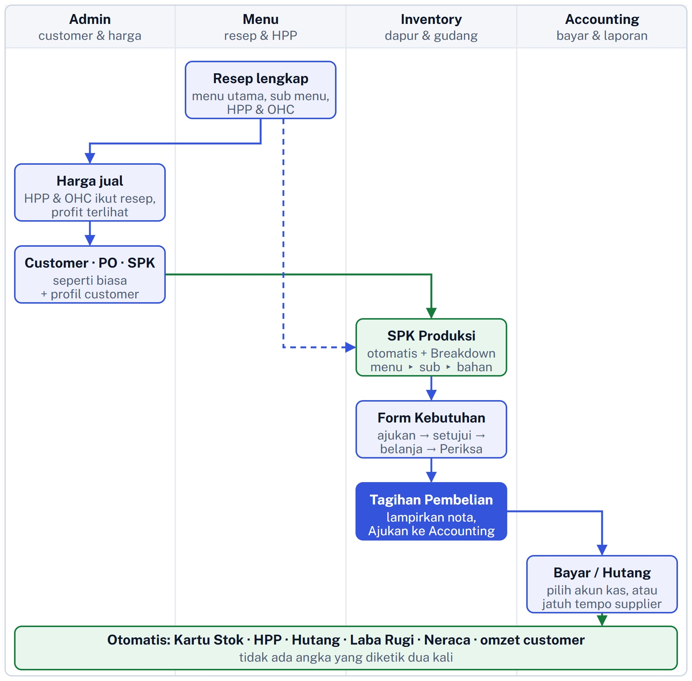
Sistem 3S sudah dipakai sejak lama untuk pesanan, SPK, pengiriman, dan keuangan. Yang baru di versi 3.0 adalah Modul Inventory yang menyambungkan dapur, gudang, dan buku kas. Diagram ini menunjukkan perjalanan satu pesanan — dulu dan sekarang.
|
SEBELUM (v2.x)
Pesanan (PO) & SPKAdmin · di sistem 3S
↓
Form Kebutuhan di kertasDapur menulis bahan & jumlah
↓
Belanja, nota dikumpulkanGudang / pembelanja
↓
Nota diketik ke PengeluaranAccounting · input ke-2
↓
Masak & kirimProduksi · Delivery
↓
Resep & HPP di aplikasi lain"Master Menu" · login terpisah, harga bahan sendiri
↓
Stok hanya lewat opnamePemakaian = Saldo Awal + Beli − Sisa, per periode
↓
Laporan keuanganAccounting · Owner
|
SESUDAH (v3.0 · 3S ONE)
Pesanan (PO) & SPKAdmin · sama seperti dulu
otomatis ↓
SPK Produksi terbentuk sendirimenu & jumlah dari SPK
otomatis ↓
Form Kebutuhan digitalkebutuhan dari resep × jumlah; dapur isi Stok Awal
↓
Ajukan → Setujui / TolakProduksi → Gudang · lonceng
↓
Terima barang: diterima, ditolak, hargaGudang · input SEKALI
otomatis ↓
Kartu Stok + Pembelian + Tagihanaccounting tinggal membayar
↓
Masak, catat pemakaian, kirimProduksi · Delivery
otomatis ↓
HPP & Laporanresep, harga bahan, stok: satu sumber
|
| Hal | Dulu | Sekarang |
|---|---|---|
| Login | Dua aplikasi, dua login (3S dan Master Menu). | Satu login; Inventory dan Menu adalah tab di bilah atas. |
| Jadwal masak | Dapur membaca SPK, menghitung bahan sendiri. | SPK Produksi & kebutuhan bahan terhitung otomatis dari resep. |
| Form Kebutuhan | Kertas: ditulis, ditandatangani, diarsip. | Digital dengan meja terpisah: produksi mengajukan, gudang menyetujui/menolak lalu menerima barang — tiap langkah tercatat siapa & kapan, plus lonceng. |
| Nota belanja | Diketik dua kali: catatan gudang + input accounting ke Pengeluaran. | Diketik sekali oleh gudang saat barang datang; pembelian dan Tagihan Pembelian terbentuk sendiri. Accounting mencocokkan foto nota lalu membayar. |
| Barang rusak | Tidak berjejak; stok dan uang tetap dianggap masuk. | Ditolak = Beli − Diterima, wajib beralasan; retur tidak dibayar, atau dibayar → Kerugian Barang Rusak. Stok hanya bertambah sebesar yang layak. |
| Harga bahan | Dua daftar harga (aplikasi resep dan catatan belanja) yang bisa berbeda. | Satu daftar (Item Inventaris) dengan histori; harga beli terbaru dari nota langsung memperbarui HPP resep. |
| Stok | Hanya angka opname per periode. | Kartu Stok per bahan: saldo awal, pembelian, pemakaian, penyesuaian — bisa ditelusuri ke SPK mana. |
| HPP di laporan | Residual opname saja (Saldo Awal + Beli − Sisa). | Bisa dari resep × produksi (kartu stok), dibandingkan dulu dengan opname (Perbandingan HPP) sebelum Owner memilih. |
| Peringatan | Tidak ada. | Stok minimum & antrean form muncul di Dashboard Inventory dan lonceng. |
| Siapa boleh apa | Per aplikasi. | Per peran & per tahap: produksi tidak bisa menyetujui maupun memeriksa; accounting tidak bisa menyetujui. |
Masukan dari presentasi sudah masuk ke sistem. Perubahan berikut paling terasa untuk tim Menu, Inventory, Admin, dan Accounting:
| Hal | Sebelumnya | Sekarang | Siapa |
|---|---|---|---|
| Pembelian bahan baku | Gudang memilih akun kas atau kredit di Form Kebutuhan; kas langsung berkurang. | Gudang belanja, lalu menagih ke Accounting lewat Tagihan Pembelian dengan foto nota. Accounting yang memilih akun kas dan membayar, atau mencatatnya sebagai hutang supplier (Bab 12). | Gudang, Accounting |
| Resep, sub menu, HPP, OHC | Di aplikasi Inventory; Admin dan Gudang ikut bisa mengubah. | Di aplikasi Menu tersendiri, dipegang peran Menu. Peran lain hanya membaca (Bab 9). | Tim Menu |
| HPP & OHC di Master Menu | Diketik manual oleh Admin. | Untuk menu yang resepnya lengkap, HPP & OHC mengikuti resep dan terkunci. Admin fokus ke harga jual & profit. Resep yang belum lengkap: tetap manual. | Admin, Tim Menu |
| Breakdown Bahan | Semua menu langsung diratakan ke bahan mentah. | Bertingkat: menu utama ▸ sub menu ▸ bahan, dibuka-tutup dengan tanda ▸. Rekap Perlu Beli tetap ada. | Dapur, Gudang |
| Aplikasi Admin | Daftar customer biasa. | Mini CRM: status customer (baru, aktif, lama tidak order, belum pernah order) dan profil berisi omzet, menu favorit, dan riwayat PO. | Admin |
| Biaya marketing | Dihitung sebagai beban di Laba Rugi. | Kategori bermode Mengurangi Kekayaan: tidak masuk Laba Rugi, tetapi mengurangi kekayaan di Neraca. Berlaku untuk transaksi mulai 1 Oktober 2026 (Bab 7). | Accounting |
| Tampilan | Inventory terlihat berbeda dari aplikasi lain. | Satu tampilan untuk semua aplikasi, termasuk halaman masuk. Letak menu dan tombol tetap sama. | Semua |
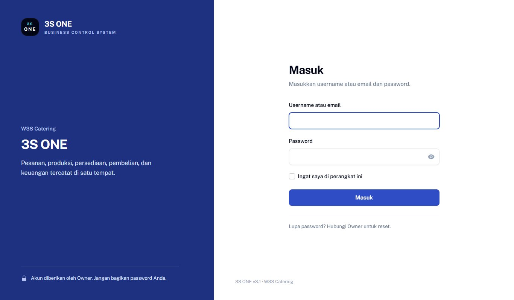
| Bagian | Fungsi |
|---|---|
| Bilah atas | Tab aplikasi: Owner, Admin, Accounting, Inventory, Menu, Sales, Marketing, Production, Delivery. Hanya yang sesuai peran Anda yang tampil. |
| Menu kiri | Menu aplikasi yang sedang dibuka, dikelompokkan (Ringkasan, Master Data, Transaksi, Laporan, ...). |
| Cari dokumen (di atas menu kiri) | Mencari PO, DO, SPK Produksi, pelanggan, menu, dan bahan dari seluruh aplikasi sekaligus — tanpa perlu tahu dokumennya ada di menu mana. Pintasan Ctrl + K. Hasilnya hanya berisi dokumen yang boleh dibuka oleh peran Anda. |
| Lonceng | Pemberitahuan untuk Anda, di semua aplikasi: form yang menunggu persetujuan Anda, barang yang sudah bisa dibelanjakan, form yang ditolak, harga bahan / harga jual menu berubah, dan profit menu keluar dari batas. Tekan Buka untuk langsung ke halamannya; Tandai semua dibaca membersihkan angka merahnya. |
| Inisial nama (pojok kanan) | Profil, ganti password, keluar. |
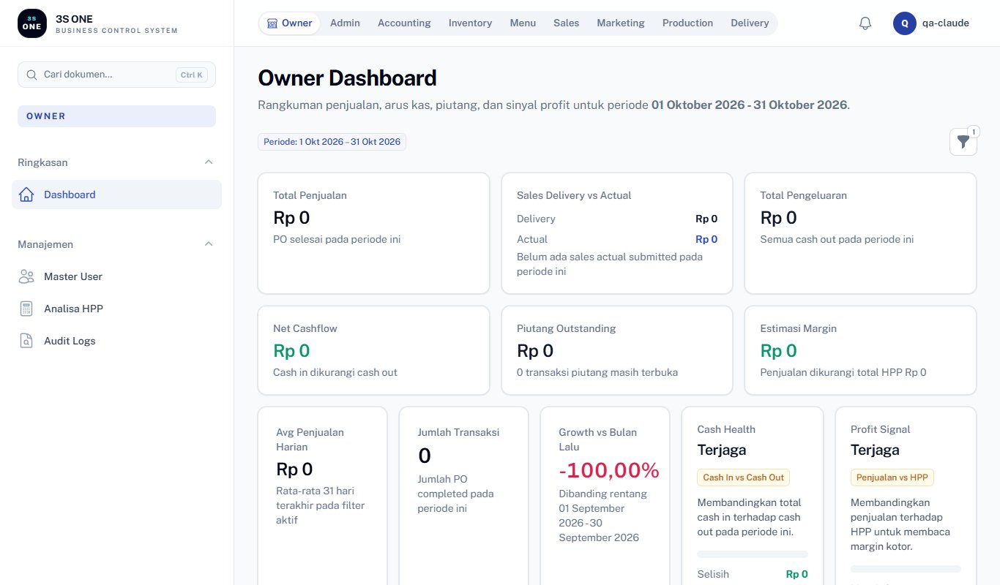
Sistem ini punya banyak menu, dan sebuah pesanan bisa muncul di beberapa tempat. Bila Anda sudah tahu apa yang dicari tetapi tidak ingat menunya, pakai Cari dokumen di atas menu kiri — tersedia di semua aplikasi.
| Yang bisa dicari | Contoh kata kunci |
|---|---|
| Purchase Order | Nomor PO, nama pelanggan, atau nama penerima — tidak harus hafal nomornya. |
| Delivery Order | Kode DO, atau nama area pengiriman. |
| SPK Produksi | Nomor SPK, judulnya, atau kode slot SPK lama. |
| Pelanggan | Nama atau nomor telepon. |
| Menu | Nama menu atau kode SKU. |
| Bahan | Nama bahan. |
Menekan Enter tanpa memilih baris membuka halaman hasil lengkap, yang menampilkan semua temuan dikelompokkan per jenis dokumen.
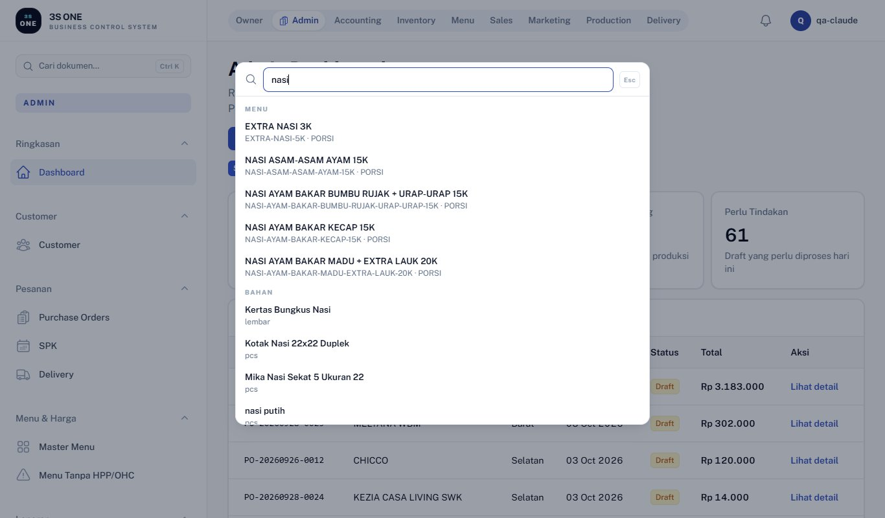
Semua daftar dan laporan memakai cara menyaring yang sama:
Filter yang berlaku tampil sebagai chip biru (misalnya Periode: 1 Sep 2026 – 30 Sep 2026). Tekan tanda × di chip untuk melepas satu filter saja tanpa mengubah yang lain. Kotak Cari di daftar menyaring sambil Anda mengetik.
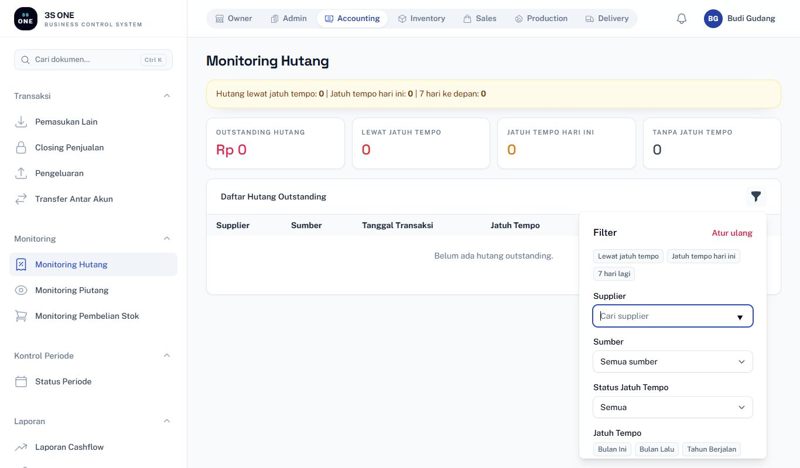
Aplikasi Admin sekarang dikelompokkan seperti mini CRM: customer, pesanan, menu & harga, dan laporan.
| Menu | Untuk apa |
|---|---|
| Dashboard | Ringkasan pesanan hari ini dan bulan berjalan. |
| Customer BARU | Daftar pelanggan beserta order terakhir, jumlah PO dan omzet 90 hari, serta status. Tab di atas memisahkan statusnya; kotak Cari mencari nama, telepon, atau alamat. Klik nama untuk membuka profil customer. |
| Purchase Orders | Mencatat pesanan pelanggan: menu, jumlah, tanggal & jam kirim, cara bayar. |
| SPK | Mengelompokkan pesanan ke slot jadwal masak. Begitu SPK disimpan, SPK Produksi di Inventory terbentuk otomatis dan dapur bisa menyusun kebutuhan bahannya. |
| Delivery | Memantau pengiriman per pesanan. |
| Master Menu | Daftar menu yang dijual. Admin mengurus harga jual; profit dan margin terhitung sendiri. Untuk menu yang resepnya sudah lengkap di aplikasi Menu, kolom Bahan Baku (HPP) dan Overhead Cost terisi dari resep dan terkunci (label HPP dari resep). Menu yang resepnya belum lengkap masih diisi manual — kotak kuning di form menu menyebut resepnya dan apa yang kurang. Mengubah harga jual mengirim lonceng ke Owner. SKU diketik sendiri (tidak dibuat otomatis) karena SKU tampil sebagai nama menu di website — tulis persis seperti yang ingin dibaca pelanggan, mis. Nasi Goreng Kampung. SKU wajib diisi dan tidak boleh sama dengan menu lain. |
| Menu Tanpa HPP/OHC | Daftar menu yang belum punya harga pokok. Lengkapi resepnya lewat tim Menu (aplikasi Menu › Pencocokan Menu), atau isi manual bila memang tanpa resep. |
| Laporan PO / Produksi / Delivery / Best Seller | Rekap operasional per periode. |
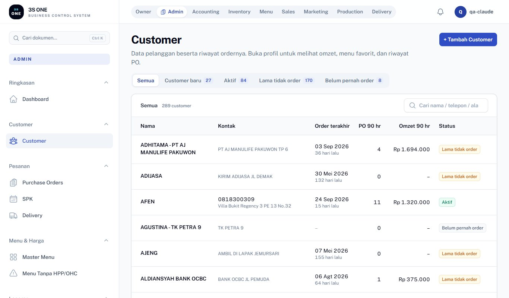
Profil menjawab pertanyaan yang biasa ditanyakan sebelum menelepon pelanggan: seberapa sering ia order, berapa nilainya, apa yang biasa dipesan, dan kapan terakhir.
| Bagian profil | Isinya |
|---|---|
| Kartu atas | Total omzet (semua PO selesai), omzet 90 hari, rata-rata per PO beserta kebiasaan order (mis. order tiap ±7 hari), dan order terakhir. |
| Omzet per bulan | Grafik batang 12 bulan terakhir. Lihat sebagai tabel menampilkan angkanya. |
| Menu favorit | Lima menu yang paling banyak dipesan (porsi), beserta jumlah PO dan nilainya. |
| Riwayat PO | Semua PO pelanggan itu, terbaru di atas. Tombol Buat PO membuka PO baru untuk pelanggan ini; Ubah data mengubah kontak dan alamatnya. |
| Status customer | Artinya |
|---|---|
| Customer baru | Order pertamanya dalam 30 hari terakhir. |
| Aktif | Masih order dalam 30 hari terakhir. |
| Lama tidak order | Pernah order, tetapi tidak ada order lebih dari 30 hari. Kandidat untuk dihubungi lagi. |
| Belum pernah order | Sudah terdaftar, belum ada PO yang selesai. |
Yang dihitung hanya PO yang sudah selesai, menurut tanggal kirimnya.
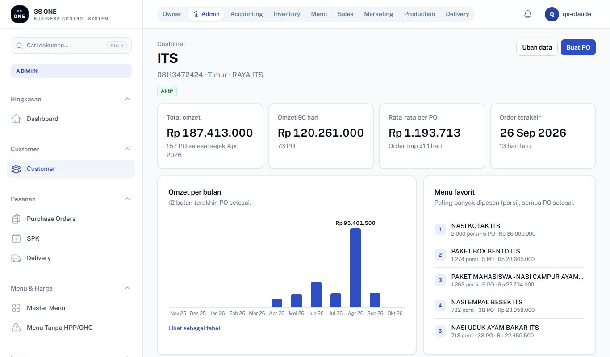
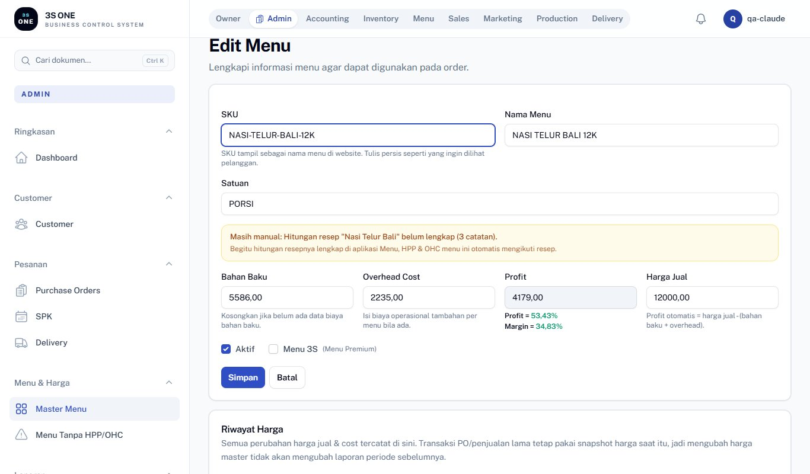
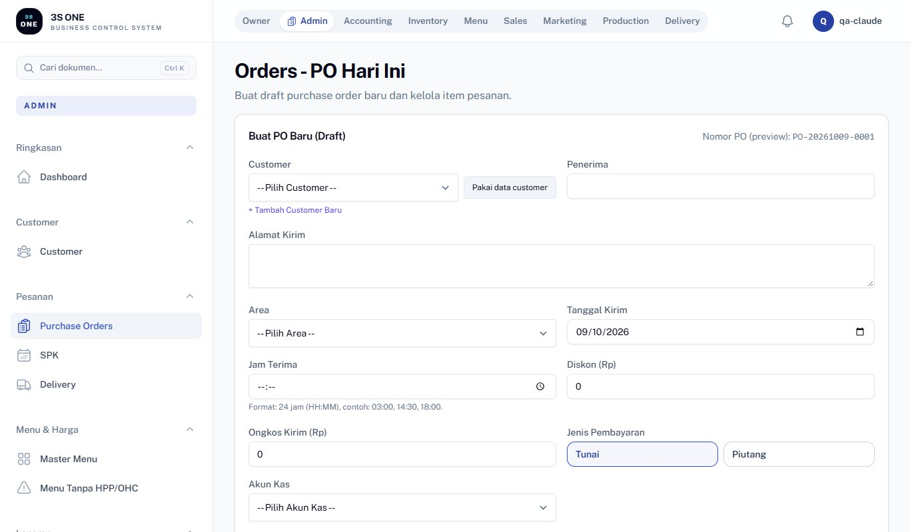
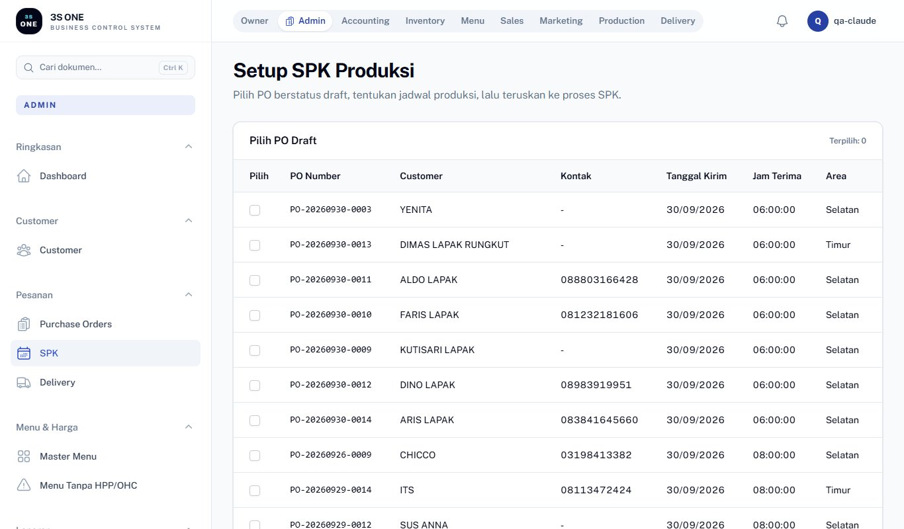
| Menu | Untuk apa |
|---|---|
| Dashboard | Berapa menu aktif yang sudah punya foto, berapa yang tampil di website, dan daftar menu yang sudah tampil di website tapi belum punya foto. |
| Katalog Foto Menu | Satu foto resmi per menu untuk materi promosi. Tekan Unggah foto (atau Ganti foto) di kartu menu, pilih berkas, dan foto langsung terunggah. JPG, PNG, WEBP maks. 5 MB; sistem otomatis mengecilkannya. Centang Tampil di website untuk menu yang terbit di website — langsung tersimpan tanpa tombol Simpan. SKU menjadi nama menu di website, jadi menu tanpa SKU tidak bisa dicentang. Menu nonaktif tidak terbit walau tercentang. Ganti SKU: klik SKU di kartu (ikon pensil), ketik, lalu Enter. Admin juga bisa menggantinya dari Master Menu; bila menunya sedang tampil di website, pihak lain (admin atau marketing) menerima lonceng, dan semua penggantian tercatat di Audit Logs. Saring dengan ikon corong: foto ada/belum, tampil/tidak tampil di website. |
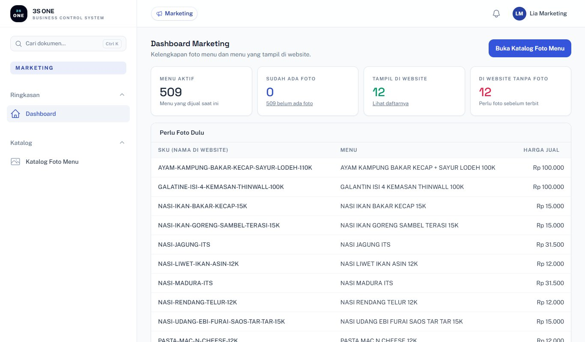
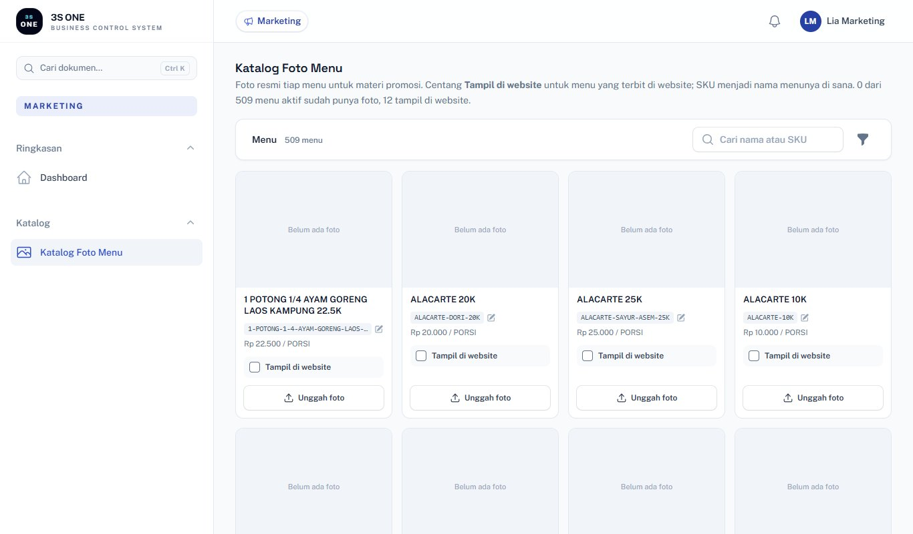
Langkah menyiapkan satu menu untuk website:
| Menu | Untuk apa |
|---|---|
| Dashboard | Penjualan hari ini dan bulan berjalan. Buka Sales Actual untuk mengisi qty yang benar-benar terjual; sisanya otomatis menjadi retur. |
| Barang Sisa | Retur dari Sales Actual yang sudah disubmit. Barang Sisa boleh dijual ke customer mana pun (tombol Jual: pilih Sales Actual draft tujuan, qty, harga) atau dibuang bila tidak layak jual (tombol Buang, alasan wajib). Seporsi juga bisa dirinci per komponen (nasi, telur, …) yang dijual atau di-waste sendiri-sendiri. Customer yang mengganti menu dicatat di Sales Actual dengan Porsi Tambahan (harga PO). Rinciannya di Bab 14. |
| Laporan Sales Final & Retur | Penjualan yang benar-benar terjadi setelah retur, dan ke mana tiap retur pergi: dijual ke siapa, dibuang, atau masih di Barang Sisa. |
| Laporan Waste | Barang Sisa yang dibuang — baik yang ketahuan tidak layak saat dijual ulang, maupun yang dibuang langsung dari halaman Barang Sisa. |
| Laporan Penjualan | Rekap penjualan per periode (juga terbaca Accounting). Mode Ringkas muat satu lembar; mode Lihat Lengkap menampilkan jumlah per harga jual untuk tiap pelanggan, dipisah Lapak dan Retail, dengan subtotal per tanggal. |
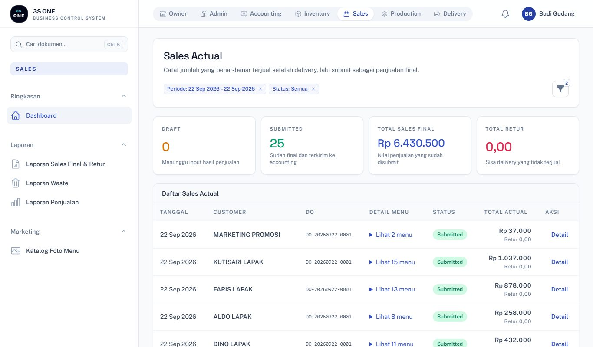
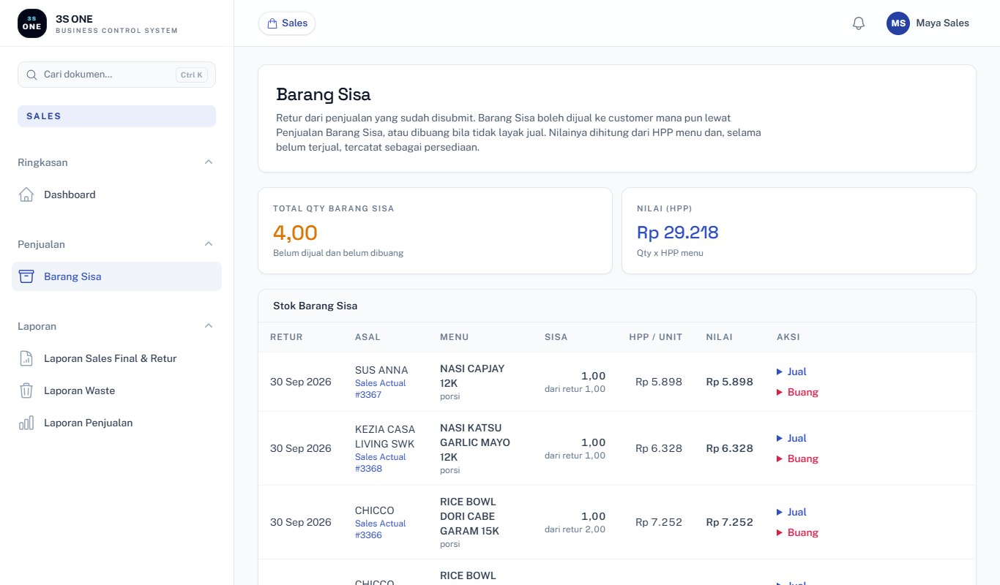
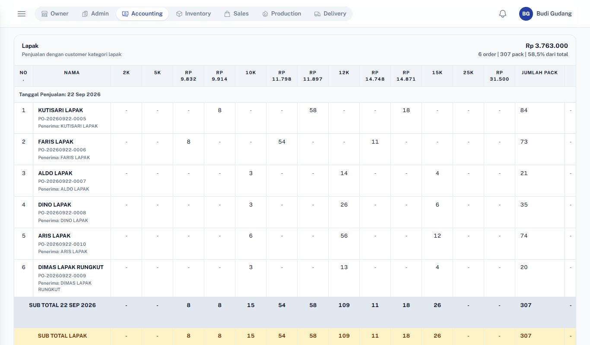
| Menu | Untuk apa |
|---|---|
| Dashboard Produksi | Jadwal masak hari ini per SPK. Dari sini ada tombol ke Form Kebutuhan di Inventory (Bab 10). |
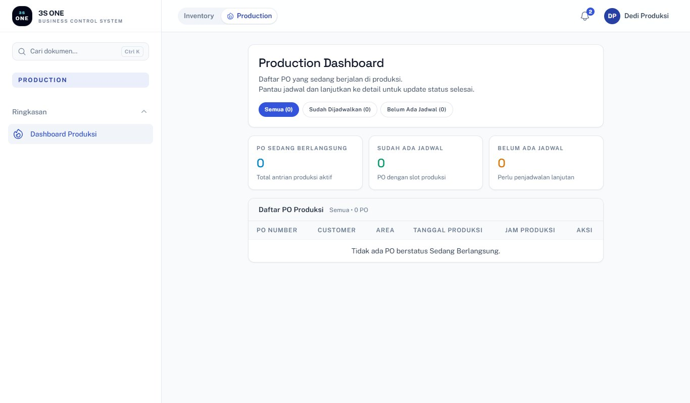
| Menu | Untuk apa |
|---|---|
| Dashboard Pengiriman | Daftar kiriman, status, dan bukti kirim (foto/penerima). |
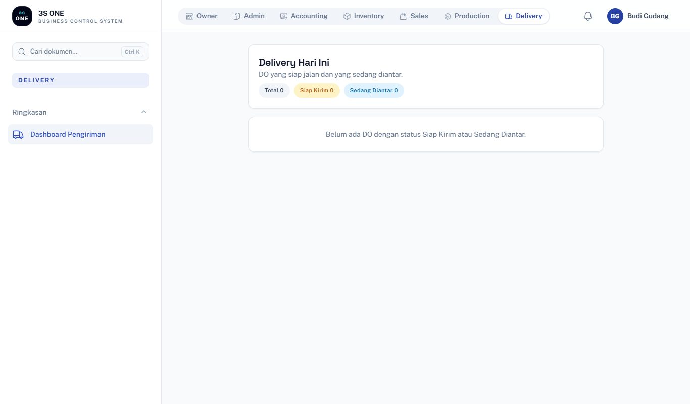
Urutan pakainya dari atas ke bawah: siapkan master & saldo awal sekali, catat transaksi setiap hari, pantau, tutup periode, lalu baca laporan.
| Kelompok / Menu | Untuk apa |
|---|---|
| Master Data Akun Kas, Kategori Pemasukan, Kategori Pengeluaran | Daftar rekening/kas dan jenis-jenis pemasukan & pengeluaran. Setiap kategori pengeluaran punya mode: Pengeluaran Langsung, Pembelian Stok, Aktiva Tetap, atau Mengurangi Kekayaan (di luar Laba Rugi) untuk biaya marketing. |
| Setup Awal Saldo Awal, Adjustment Neraca, Adjustment Laba Rugi | Diisi sekali di awal (atau saat koreksi): saldo kas awal dan penyesuaian angka laporan. |
| Transaksi Pemasukan Lain, Closing Penjualan, Pengeluaran, Tagihan Pembelian, Transfer Antar Akun | Catatan uang masuk/keluar harian. Belanja bahan baku dari gudang datang sebagai Tagihan Pembelian: cocokkan notanya lalu Bayar atau jadikan hutang supplier (Bab 12) — jangan dicatat lagi di Pengeluaran. Pengeluaran dipakai untuk biaya lain (gaji, listrik, promosi, …). |
| Monitoring Hutang, Piutang, Pembelian Stok | Siapa belum dibayar / belum membayar, dan rekap pembelian bahan. Hutang ke supplier tertaut ke Master Supplier (Bab 8). |
| Kontrol Periode Status Periode | Menutup buku bulanan. Setelah ditutup, transaksi bulan itu terkunci; perubahan hanya lewat penyesuaian yang tercatat. |
| Laporan Cashflow, Penjualan, Laba Rugi, Neraca, Pemakaian Bahan, Laporan Final | Laporan keuangan per periode; bisa diekspor Excel/PDF. |
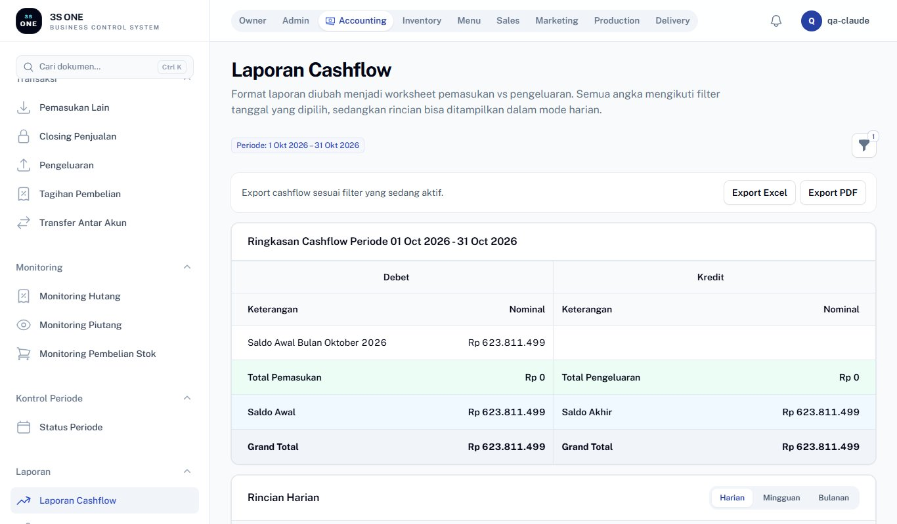
Blok atas Laba Rugi menghitung Bahan Baku Terpakai dari Bahan Baku Lama + Bahan Baku Baru − Sisa Stok, ditambah/dikurangi Barang Sisa Awal dan Akhir. Di bawahnya ada rincian yang sudah termasuk di angka itu (Barang Hilang, Barang Temuan, Barang Sisa Dibuang). Supaya laporan tetap ringkas, rincian ini tertutup dulu:
Tidak ada tombol berarti bulan itu tidak ada Barang Hilang, Temuan, maupun Barang Sisa yang dibuang. Di Export PDF/Excel rincian selalu tercetak, karena kertas tidak bisa diklik.
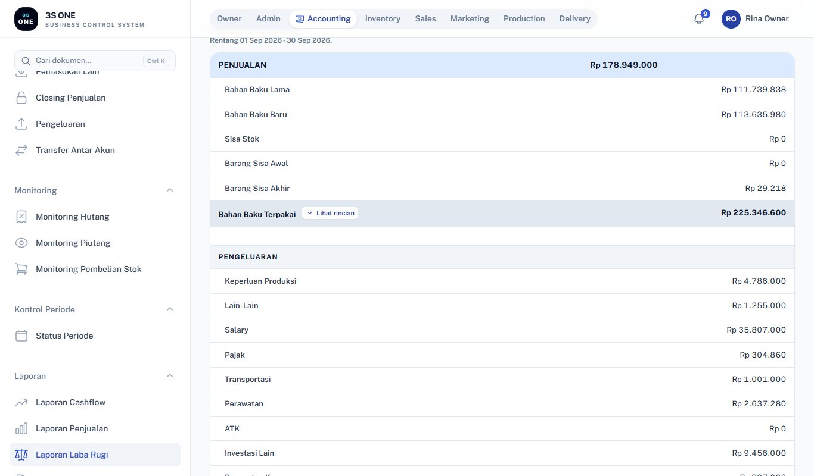
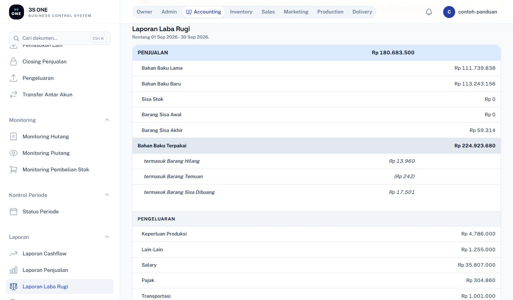
Rinciannya, termasuk apa yang terjadi di buku kas dan Neraca, ada di Bab 12.
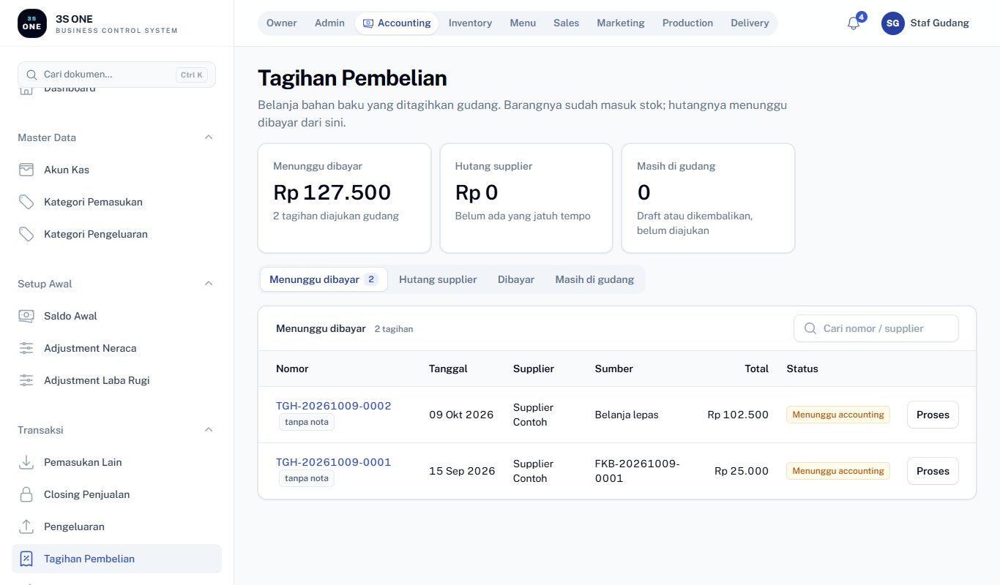
Biaya promosi (iklan, sampel, endorsement, dan sejenisnya) tidak dihitung sebagai beban di Laba Rugi supaya laba operasional tetap terbaca bersih, tetapi uangnya tetap keluar dan mengurangi kekayaan perusahaan di Neraca.
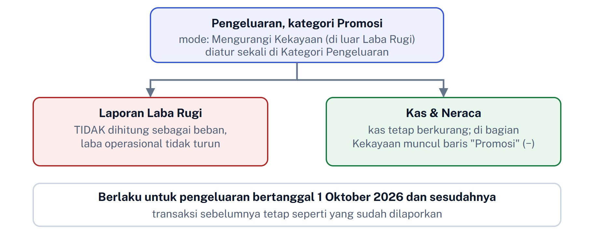
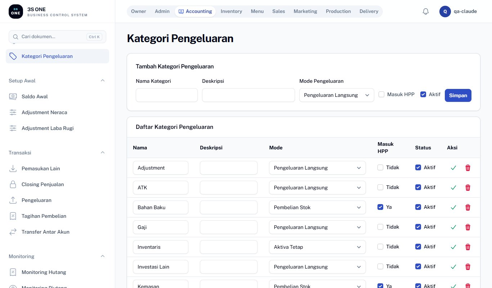
Inilah "dapur data" untuk bahan baku. Menunya dibagi tiga kelompok: Inventory (bahan & stok), Pembelian, dan Produksi. Resep dan HPP sekarang ada di aplikasi Menu (Bab 9).
| Menu | Untuk apa |
|---|---|
| Dashboard | Ringkasan: bahan di bawah stok minimum, antrean form yang menunggu Anda, SPK terdekat, perubahan harga terakhir. |
| Item Inventaris | Daftar bahan (nama, satuan, harga per satuan, stok minimum). Setiap perubahan harga tersimpan di Histori Harga. Tombol Export Riwayat Harga mengunduh seluruh histori harga semua bahan ke Excel; Import Excel untuk mengisi atau memperbarui banyak bahan sekaligus. |
| Stock Opname | Hasil hitung fisik stok per periode dalam rupiah per kategori; menjadi dasar nilai persediaan di Neraca. |
| Opname Bahan | Hitung fisik per bahan dalam kuantitas (kg, liter, butir) kapan saja. Isi hasil hitung pada bahan yang diopname; selisih terhadap Kartu Stok otomatis tercatat sebagai Barang Hilang (hitung kurang) atau Barang Temuan (hitung lebih). Bahan yang belum pernah tercatat di Kartu Stok: hitungan pertamanya menjadi saldo awal. Tidak menggantikan Stock Opname bulanan. |
| Susut Bahan | Indikator per bahan: hijau (susut di bawah 1%), kuning (1–10%), merah (di atas 10%). Klik sebuah bahan untuk melihat SPK dan menu yang memakainya — di situlah susutnya bisa dilacak. Cara hitungnya di Bab 14. |
| Saldo Awal Stok | Nilai stok awal periode. |
| Pengaturan Inventory | Angka bawaan: % OHC dan profit resep, sumber angka HPP, pembulatan belanja, perlakuan barang ditolak, batas bawah/atas profit menu, batas warna susut bahan, tanggal mulai Barang Sisa dihitung persediaan, rentang laporan menu tidak diproduksi, penomoran dokumen. Hanya Owner. |
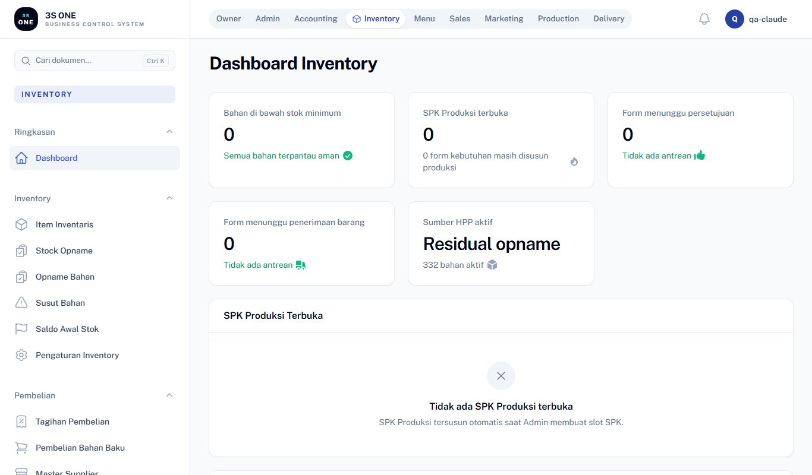
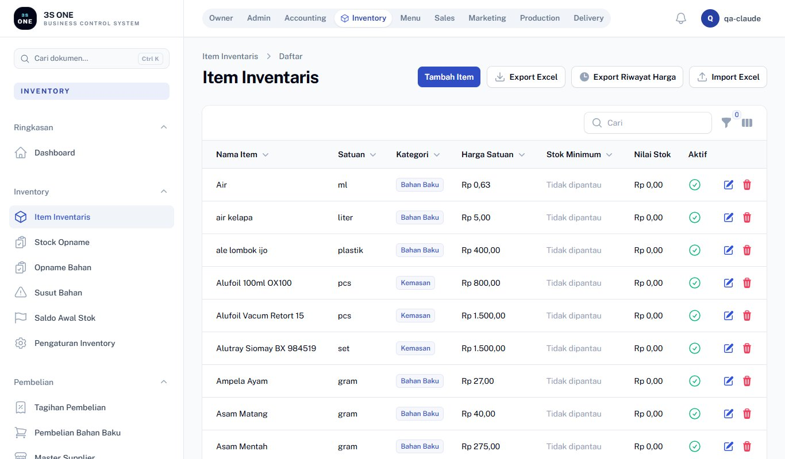
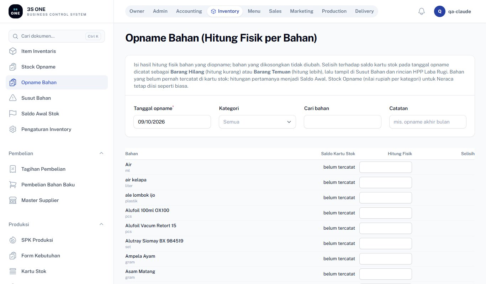
| Menu | Untuk apa |
|---|---|
| Tagihan Pembelian | Belanja gudang yang ditagihkan ke accounting. Satu Form Kebutuhan yang sudah Diperiksa = satu tagihan, terbentuk sendiri. Belanja di luar SPK dicatat dengan tombol Belanja Lepas. Di sini gudang melampirkan foto nota dan menekan Ajukan ke Accounting. Tab: Belum diajukan, Di accounting, Dibayar, Semua. Alur lengkapnya di Bab 12. |
| Pembelian Bahan Baku | Rekap pembelian per bahan beserta supplier dan kondisi barang (Baik / Tidak Baik). Terisi otomatis dari Form Kebutuhan dan Belanja Lepas. |
| Master Supplier | Daftar pemasok bahan baku: nama, kontak, telepon, rekening, termin bayar (hari), dan bahan yang dipasok. Termin bayar mengisi jatuh tempo bawaan tagihan. Halaman supplier juga menampilkan riwayat pembeliannya. Supplier yang sudah punya transaksi tidak bisa dihapus — nonaktifkan saja. |
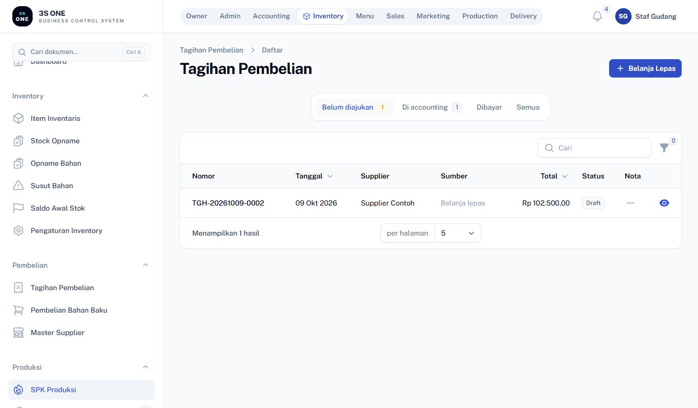
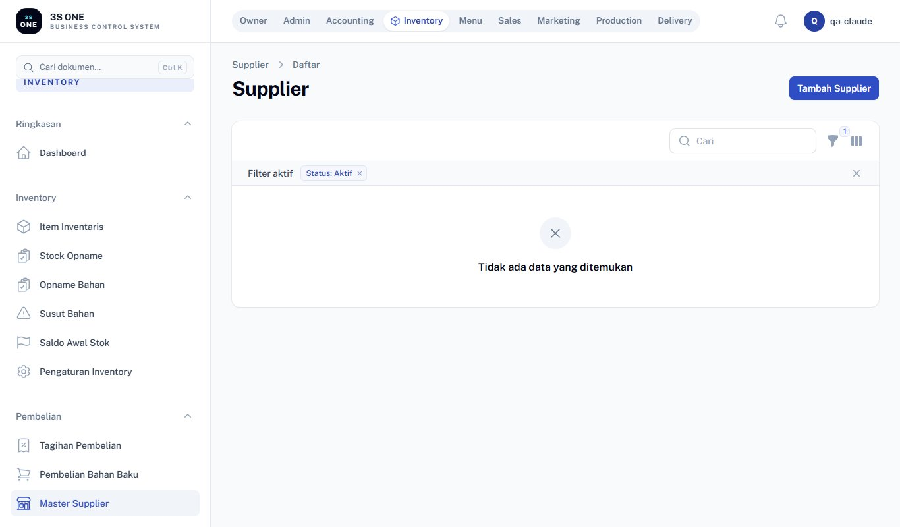
| Menu | Untuk apa |
|---|---|
| SPK Produksi | Jadwal masak dari SPK admin: menu & jumlah. Dari halamannya ada:
• Form Kebutuhan — daftar belanja & stok (Bab 10). • Breakdown Bahan — Rincian per menu bertingkat: tiap menu utama punya tanda ▸; klik untuk membuka komponennya (sub menu dan bahan), dan klik ▸ pada sub menu untuk membuka bahannya. Di bawahnya Rekap bahan & stok menjumlahkan semua bahan mentah dan mencocokkannya dengan Kartu Stok: kolom Perlu Beli = kebutuhan − stok sistem. Label belum lengkap / belum tertaut menandai baris resep yang biayanya belum bisa dihitung. Menu yang belum punya resep disebutkan di kotak kuning — minta tim Menu menautkannya di Pencocokan Menu. Bisa Export Excel. • Lembar Kerja (menu Lainnya) — pembagian tugas dapur: Salin dari Template Menu mengisi dari Pekerjaan Menu, lalu tentukan pelaksana dan centang yang selesai; Export Excel untuk ditempel di dapur. • Plating (menu Lainnya) — komponen isi piring tiap menu (kuah, lauk, nasi, kemasan) dengan jumlah porsinya; Komponen per Menu, Cetak Plating (PDF), dan Export Excel. |
| Form Kebutuhan | Daftar semua form beserta statusnya. Alur lengkapnya di Bab 10. |
| Kartu Stok | Catatan keluar-masuk tiap bahan (saldo awal, pembelian, pemakaian, Barang Hilang, Barang Temuan). Hanya dibaca — terisi otomatis dari form, Tutup SPK, dan Opname Bahan. |
| Pelaksana | Daftar orang dapur untuk lembar kerja. |
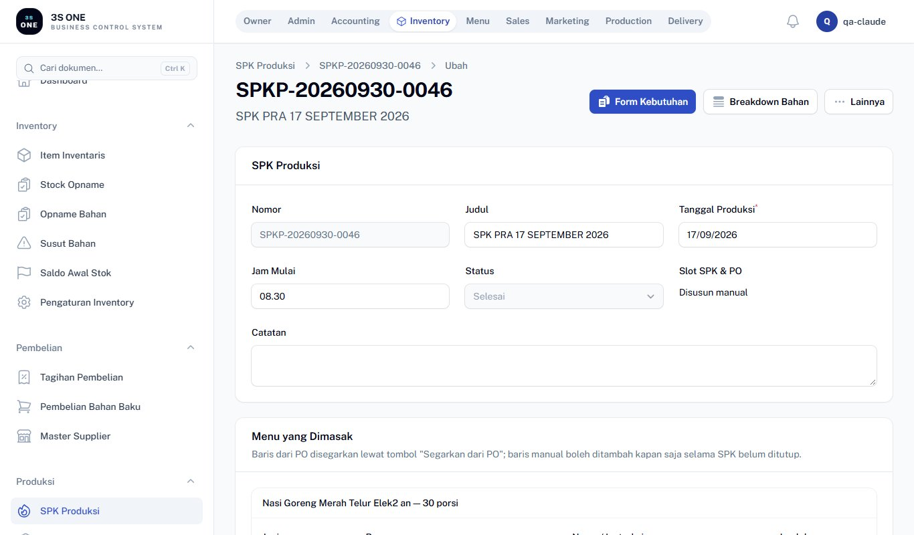
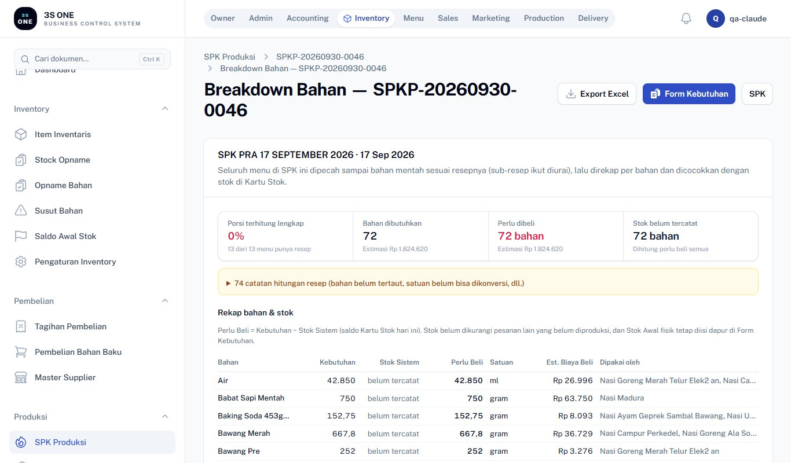
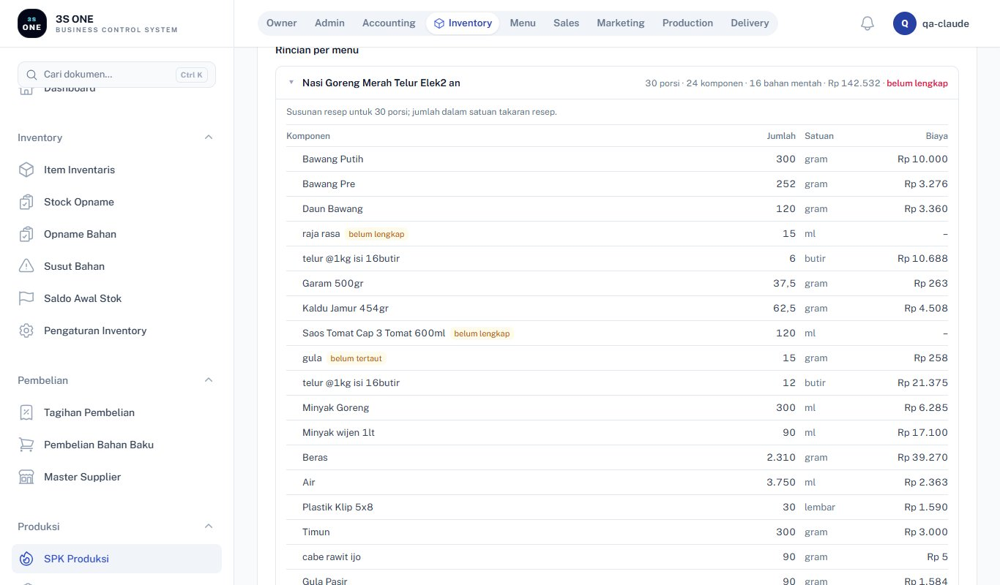
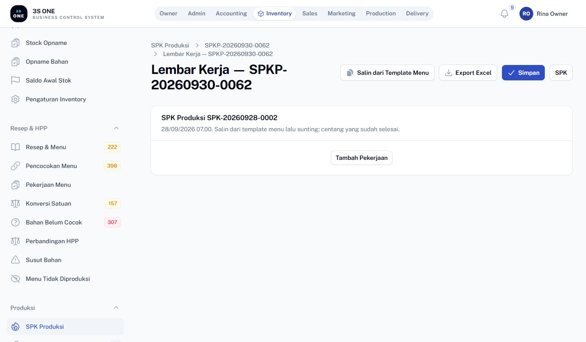
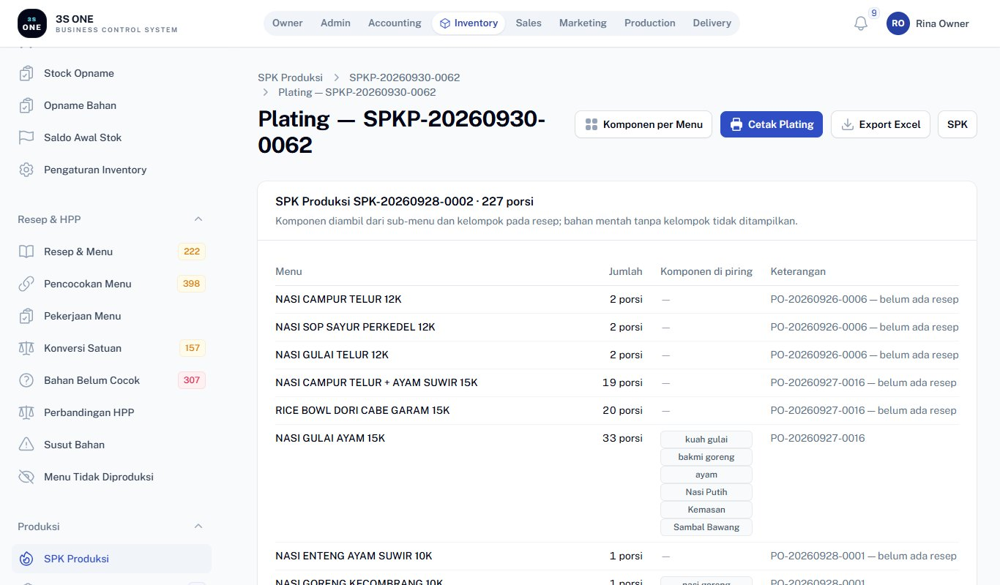
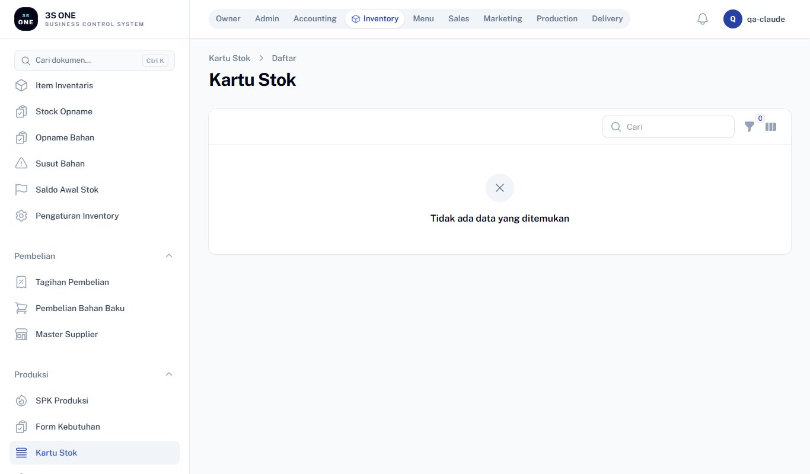
Aplikasi Menu adalah tempat tim menu menyusun resep: menu utama, sub menu, takaran, dan biayanya (HPP & OHC). Hasilnya dipakai di dua tempat: Admin › Master Menu untuk harga jual dan profit, dan Inventory › SPK Produksi untuk menghitung bahan yang harus dibeli.
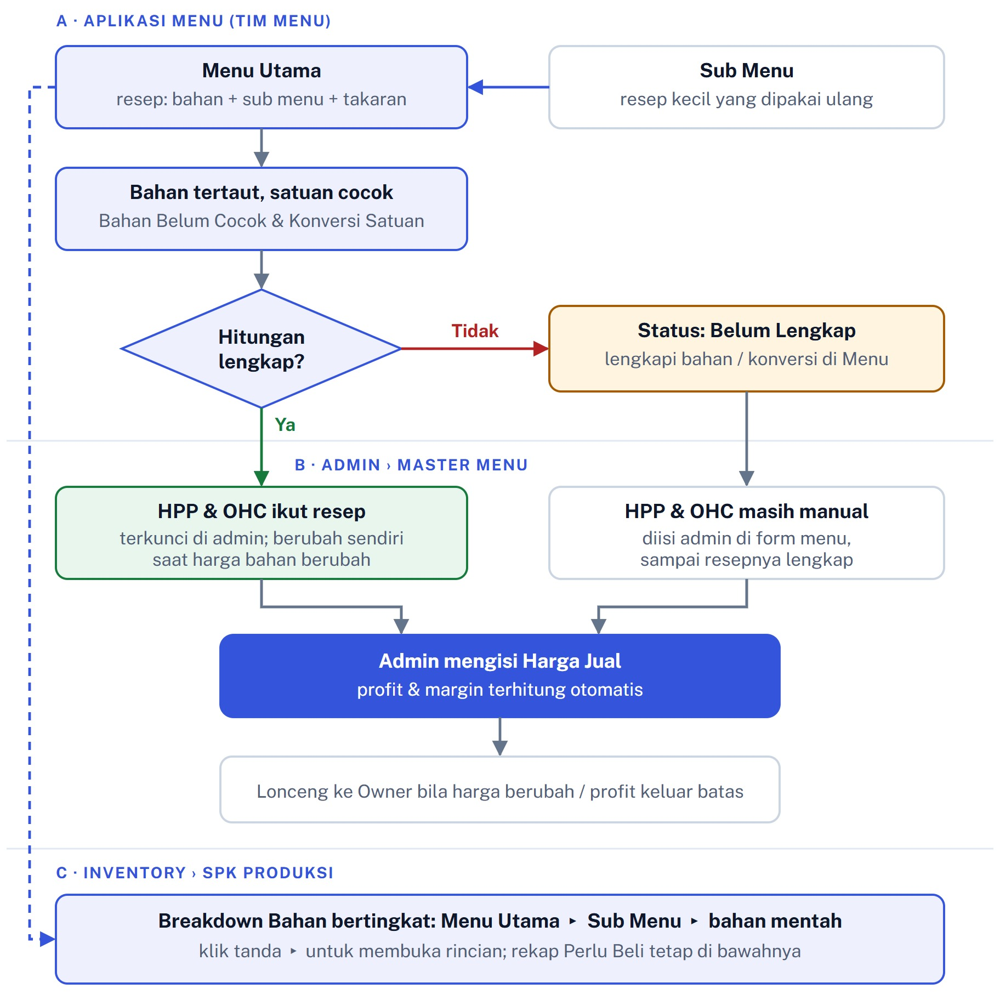
| Menu | Untuk apa |
|---|---|
| Dashboard | Enam kartu pekerjaan: menu utama aktif, produk dijual tanpa resep (HPP-nya masih manual di Admin), resep dengan bahan belum tertaut, pasangan satuan tanpa aturan konversi, profit menu keseluruhan, dan menu tidak diproduksi 3 bulan. Angka di kartu kuning/merah adalah antrean kerja tim menu. |
| Menu Utama / Sub Menu | Daftar resep. Menu utama adalah yang dijual; sub menu adalah resep kecil yang dipakai ulang di banyak menu (nasi, sambal, bumbu dasar). Daftarnya menampilkan HPP / Hasil, HPP + OHC, Harga Jual, Profit % dan Status Hitungan (Lengkap / Belum Lengkap). Tab di atas: Semua, Menu Utama, Sub-Menu, Belum Dipetakan, Ada Bahan Belum Tertaut. Tombol Export Daftar Menu, Export Excel, dan Import Excel di kanan atas. |
| Pencocokan Menu | Daftar kerja menautkan menu di Master Menu (Admin) ke resepnya, diurutkan dari yang paling laku 90 hari terakhir. Tiap baris punya tiga jalan keluar: Tautkan ke resep yang ada, Buat Resep, atau Tanpa Resep (mis. minuman kemasan). Bisa dikerjakan lewat Excel (export, isi, import). |
| Pekerjaan Menu | Template pembagian kerja dapur per menu (mis. “goreng ayam”, “siapkan sambal”). Disalin ke Lembar Kerja setiap SPK Produksi, jadi cukup diatur sekali. |
| Konversi Satuan | Aturan mengubah satuan resep ke satuan harga (mis. 1 kg = 16 butir). Tanpa aturan ini, biaya baris resep dihitung nol — halaman Belum Diatur menunjukkan mana yang kurang. |
| Bahan Belum Cocok | Nama bahan di resep yang belum terhubung ke Item Inventaris. Tautkan, buat baru, atau abaikan. |
| Perbandingan HPP | HPP menurut resep × produksi dibandingkan HPP menurut opname, per periode. Dasar Owner memilih sumber HPP laporan. |
| Menu Tidak Diproduksi | Menu aktif yang tidak pernah masuk SPK Produksi dalam rentang yang dipilih (bawaan 3 bulan), beserta kapan terakhir diproduksi dan terjual. |
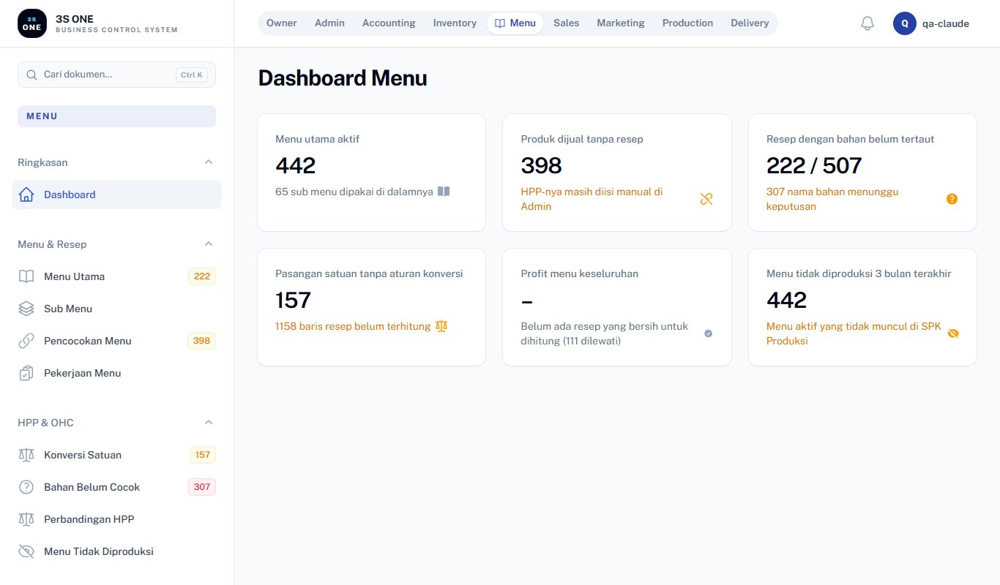
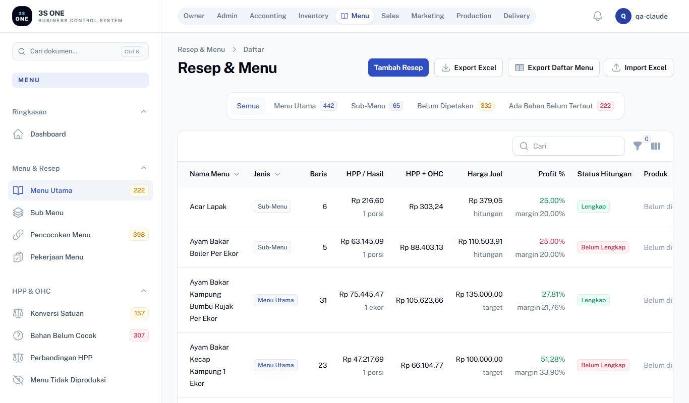
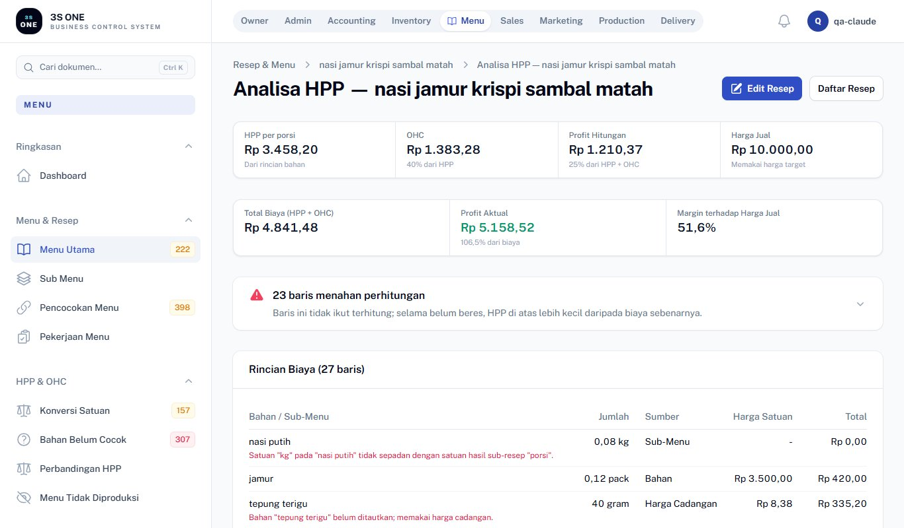
Begitu sebuah resep berstatus Lengkap (semua bahan tertaut, semua satuan bisa dikonversi) dan menu di Master Menu sudah ditautkan ke resep itu lewat Pencocokan Menu, HPP & OHC menu itu di Admin otomatis mengikuti resep dan terkunci. Kalau harga bahan berubah, HPP-nya ikut berubah sendiri. Selama resep belum lengkap, HPP menu itu tetap angka manual dari Admin.
| Antrean | Cara mengerjakan | Selesai kalau |
|---|---|---|
| 1. Konversi Satuan (kerjakan pertama) | Buka Konversi Satuan › Belum Diatur. Isi aturan untuk tiap pasangan (mis. 1 kg telur = 16 butir, 1 botol kecap = 600 ml). | angkanya 0 |
| 2. Bahan Belum Cocok | Tautkan tiap nama bahan di resep ke Item Inventaris yang benar, buat bahan baru, atau abaikan. | angkanya 0 |
| 3. Pencocokan Menu | Mulai dari baris paling atas (paling laku): Tautkan, Buat Resep, atau Tanpa Resep. | menu terlaris semuanya tertaut |
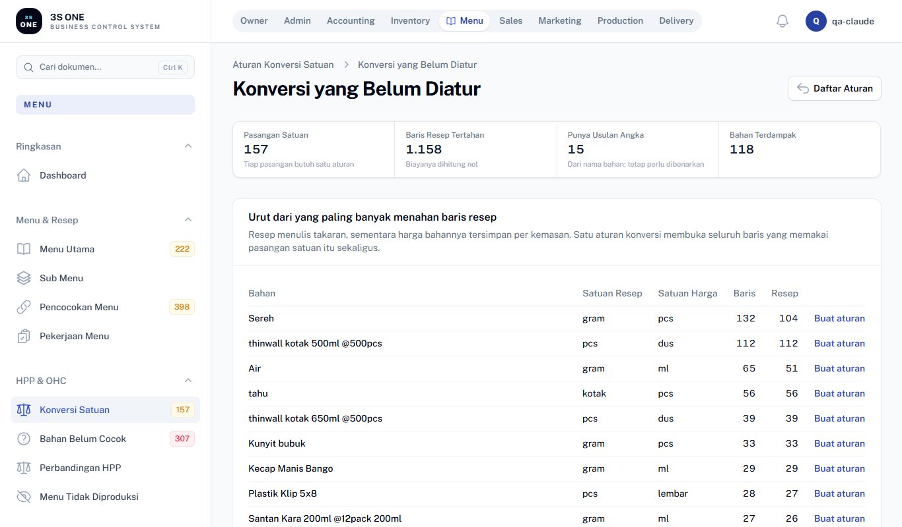
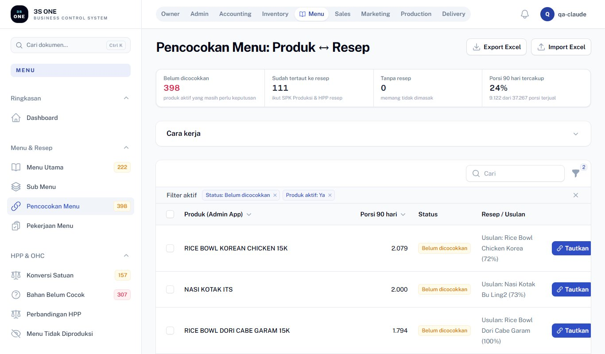
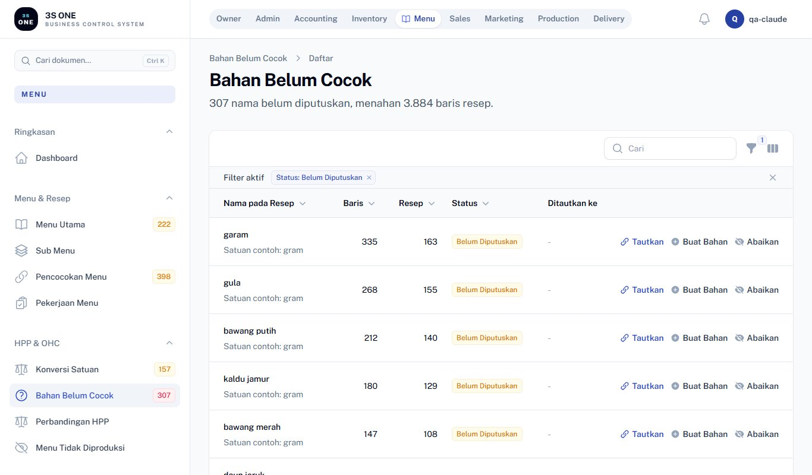
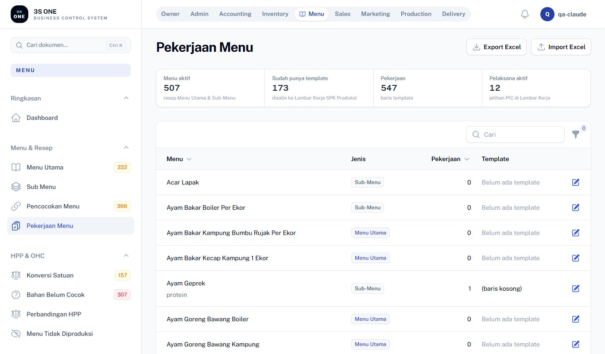
Form Kebutuhan menggantikan form kertas "Kebutuhan, Stok & Pembelian Barang". Satu form untuk satu SPK Produksi. Pekerjaannya berpindah meja — tiap meja hanya melihat tombol untuk bagiannya.
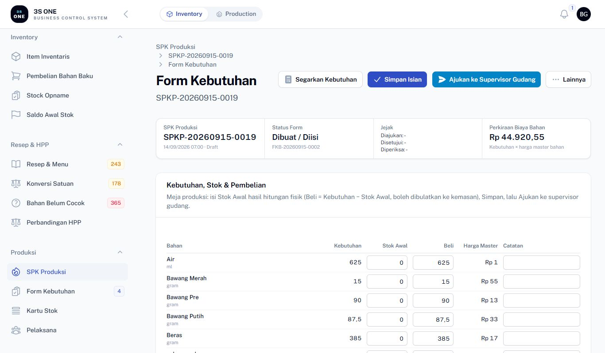
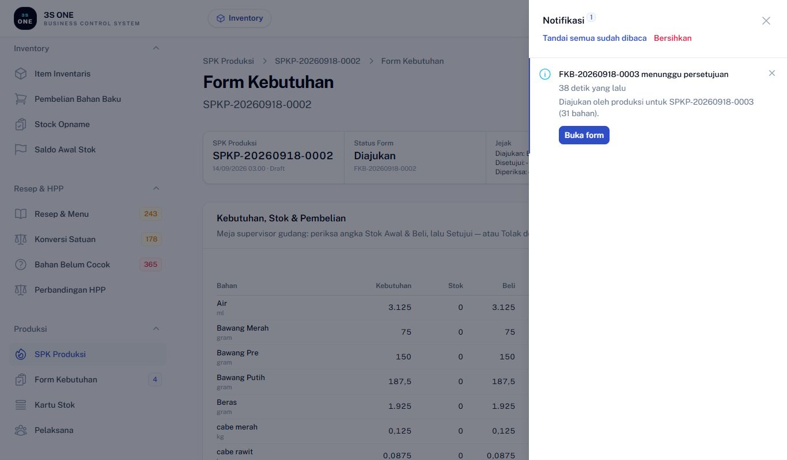
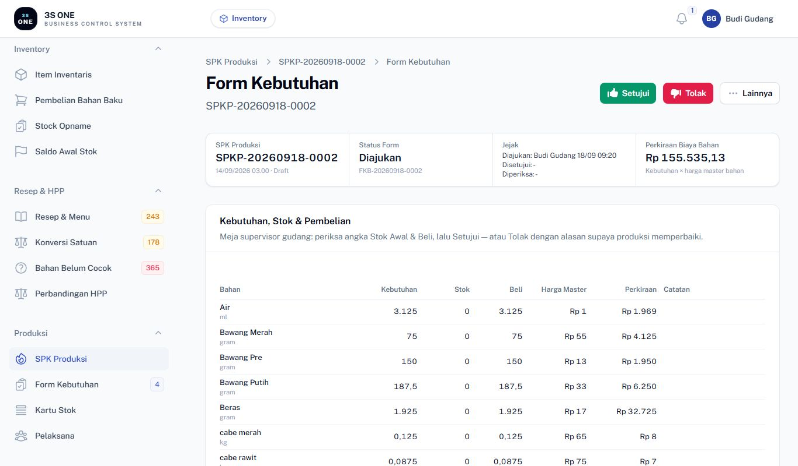
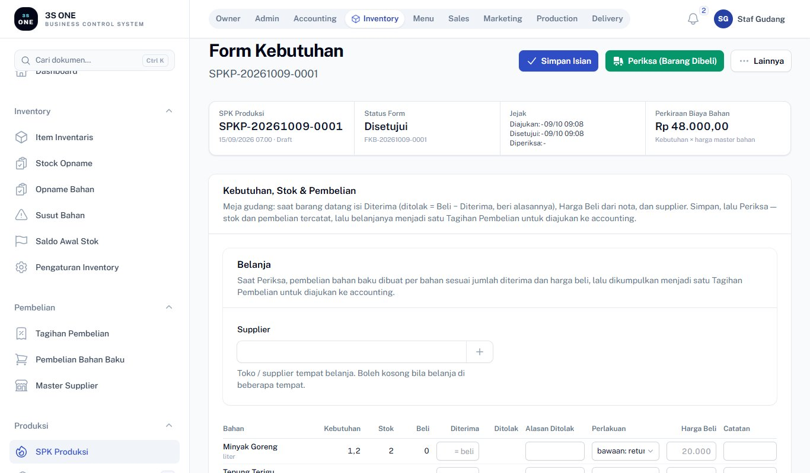
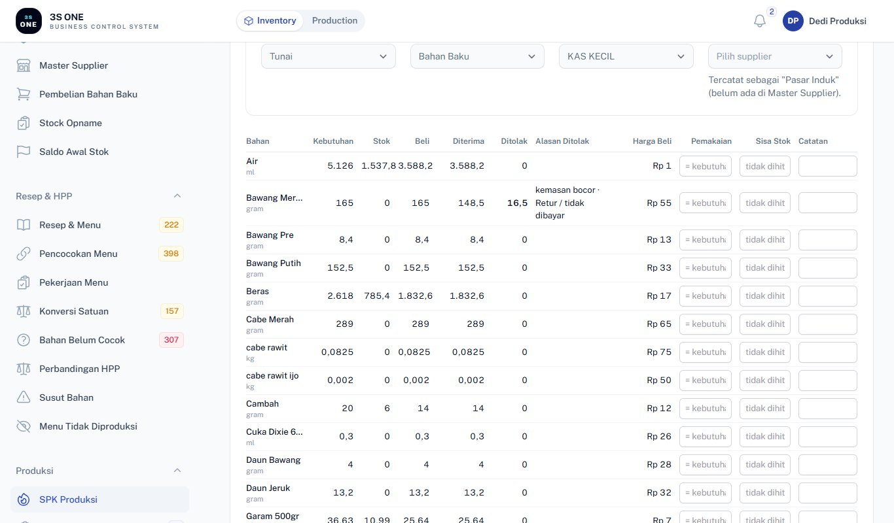
| Kolom | Kalau dikosongkan | Kalau diisi |
|---|---|---|
| Pemakaian | Dianggap sama dengan Kebutuhan resep. | Angka ini yang keluar dari Kartu Stok. Lebih besar dari resep = lebih pakai, ikut dihitung di Susut Bahan. |
| Sisa Stok | Tidak dihitung; stok mengikuti perhitungan sistem. | Hasil hitung fisik sisa bahan setelah masak. Sistem membandingkannya dengan saldo Kartu Stok: kurang = Barang Hilang, lebih = Barang Temuan (Bab 14). |
| Status | Artinya | Yang bisa bertindak |
|---|---|---|
| Dibuat / Diisi | Masih disusun dapur. | Produksi |
| Diajukan | Menunggu keputusan gudang. Terkunci. | Inventory (Owner/Admin sebagai cadangan) |
| Disetujui | Gudang belanja / menunggu barang datang. | Inventory / Accounting |
| Diperiksa | Barang sudah masuk stok dan Tagihan Pembelian-nya terbentuk. Menunggu dapur menutup SPK. | Produksi (tagihan: gudang) |
Di tahap Disetujui, staf gudang mengisi tabel bahan seperti ini untuk tiap baris:
| Kolom | Isi dengan |
|---|---|
| Diterima | Jumlah yang layak masuk gudang. Kosong = sama dengan Beli. |
| Ditolak | Terhitung sendiri = Beli − Diterima. Tidak bisa diketik, supaya tidak ada barang yang "hilang" di antara keduanya. |
| Alasan Ditolak | Wajib kalau ada yang ditolak (busuk, kemasan rusak, salah kirim, ...). |
| Perlakuan | Retur / tidak dibayar (bawaan) — barang dikembalikan, tidak ada biaya. Dibayar — tetap dibayar; nilainya masuk Kerugian Barang Rusak. |
| Harga Beli | Harga per satuan dari nota. Kosong = memakai harga master bahan. |
| Supplier (di atas tabel) | Toko / supplier tempat belanja, dari Master Supplier (supplier baru bisa ditambahkan langsung dengan tanda +). Boleh kosong bila belanja di beberapa tempat. Akun kas tidak dipilih di sini — yang membayar Accounting, lewat Tagihan Pembelian. |
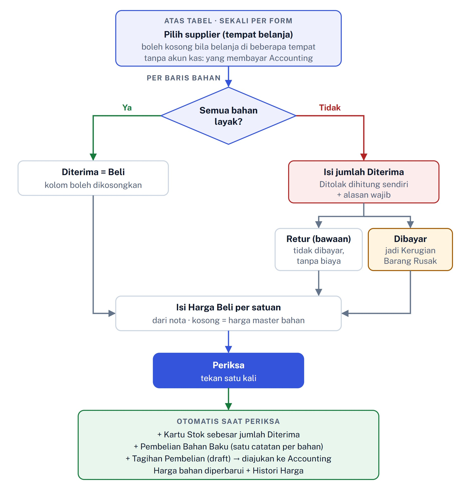
| PeriksaStaf gudang | → |
Kartu Stok+ Diterima × Harga Beli Pembelian Bahan Bakusatu catatan per bahan Tagihan Pembelian (Draft)hutang sampai accounting membayar Kerugian Barang Rusakhanya bila ditolak-Dibayar Harga master bahanikut harga beli + histori |
Beli 20 kg ayam. Datang 18 kg bagus, 2 kg busuk dikembalikan ke supplier. Nota Rp 38.000/kg.
Pembagian kerjanya mengikuti kenyataan di perusahaan: Inventory yang membeli bahan baku dan mengetik isi nota (jumlah dan harga) saat barang datang; Accounting memasukkan nota itu ke buku kas — mencocokkan, lalu membayar atau mencatatnya sebagai hutang supplier. Tidak ada yang mengetik nota dua kali.
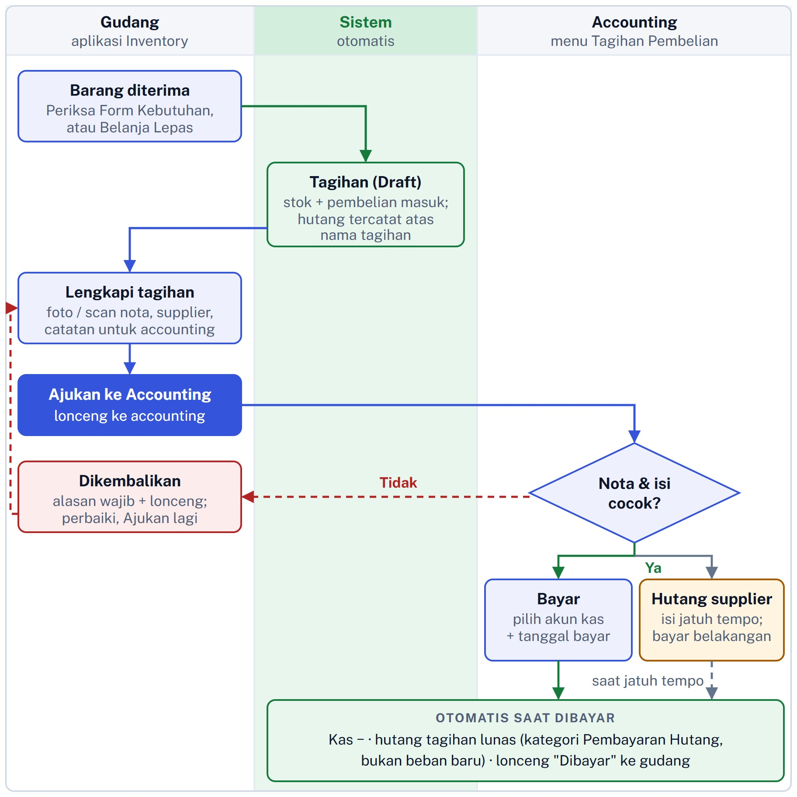
| Status | Artinya | Yang bertindak |
|---|---|---|
| Draft | Terbentuk sendiri saat Periksa (atau saat Belanja Lepas disimpan). Barang sudah di stok; hutangnya tercatat atas nama tagihan. | Gudang: lampirkan nota, Ajukan |
| Menunggu accounting | Sudah diajukan. Gudang tidak bisa mengubahnya lagi. | Accounting |
| Dikembalikan | Accounting menemukan yang tidak cocok; alasannya tampil di kotak merah. | Gudang: perbaiki, Ajukan lagi |
| Hutang supplier | Supplier memberi tempo. Tercatat di Monitoring Hutang dengan jatuh temponya. | Accounting: Bayar saat jatuh tempo |
| Dibayar | Lunas dari akun kas yang dipilih. Selesai. | – |
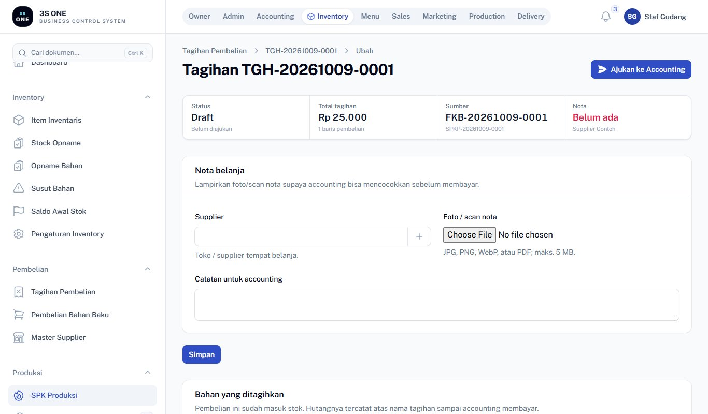
Untuk belanja yang tidak berasal dari Form Kebutuhan (stok gudang, bahan yang habis mendadak), tekan Belanja Lepas di Inventory › Tagihan Pembelian. Isi tanggal belanja, supplier, lalu baris bahan: bahan, jumlah (dalam satuan bahan), dan harga per satuan. Saat disimpan, barangnya langsung masuk Kartu Stok dan tagihan draft-nya terbentuk — lanjutkan dengan langkah 2–3 di atas.
| Saat | Yang tercatat |
|---|---|
| Barang diterima (Periksa / Belanja Lepas) | Persediaan bertambah, dan hutang tagihan bertambah dengan nilai yang sama. Kekayaan bersih tidak bergeser. |
| Accounting membayar | Kas berkurang dan hutang tagihan lunas, dengan kategori Pembayaran Hutang. Karena itu pembayaran tagihan tidak dihitung lagi sebagai beban di Laba Rugi; biaya bahannya masuk Laba Rugi lewat Bahan Baku Terpakai. |
| Jadikan hutang supplier | Hutangnya tetap terbuka dengan jatuh tempo; tampil di Monitoring Hutang sampai dibayar. |
Supaya angka di laporan bisa dipercaya, tiap angka punya satu sumber:
| Angka | Sumbernya |
|---|---|
| Harga bahan | Item Inventaris (harga per satuan). Berubah lewat: edit manual, import, atau harga beli di Form Kebutuhan. Semua perubahan tersimpan di Histori Harga. |
| HPP satu menu | Resep di aplikasi Menu (bahan × takaran × harga bahan, termasuk sub menu) + OHC % + profit % → harga jual hitungan. Lihat Analisa HPP. |
| HPP & OHC di Admin › Master Menu | Mengikuti resep bila resepnya Lengkap dan menunya sudah ditautkan; selain itu angka manual dari Admin (Bab 9). |
| Stok bahan | Kartu Stok: saldo awal + pembelian − pemakaian − Barang Hilang + Barang Temuan. Terisi dari Form Kebutuhan, Tutup SPK, dan Opname Bahan — bukan diketik. |
| Barang Hilang / Barang Temuan | Selisih hitung fisik (Sisa Stok saat Tutup SPK, atau Opname Bahan) terhadap Kartu Stok. Tampil di Susut Bahan dan sebagai rincian HPP di Laba Rugi. |
| Bahan Baku Terpakai (Laba Rugi) & Laporan Pemakaian Bahan | Dua cara hitung: Residual opname (Saldo Awal + Beli − Sisa) atau Resep × produksi (dari kartu stok). Mana yang dipakai diatur Owner di Pengaturan Inventory setelah Perbandingan HPP beberapa periode dianggap cocok. |
| Nilai persediaan (Neraca) | Stock Opname terakhir + Barang Sisa yang belum terjual (qty × HPP menu). |
Karena harga bahan berubah — biasanya setelah gudang mencatat harga beli baru di Form Kebutuhan. Buka Item Inventaris › Histori Harga untuk melihat kapan, dari berapa ke berapa, dan dari form mana. Kalau harga itu keliru, perbaiki harga bahannya; HPP menu ikut.
Bahan yang diberi stok minimum di Item Inventaris akan muncul di Dashboard Inventory (dan lonceng sekali sehari) begitu nilainya di bawah batas.
Tiga hal ini menjawab pertanyaan yang sama: ke mana perginya barang yang tidak terjual atau tidak terpakai sesuai resep? Dulu semuanya tersembunyi di dalam angka HPP; sekarang masing-masing punya namanya sendiri.
| Kejadian | Dicatat di | Muncul di laporan sebagai |
|---|---|---|
| Sisa bahan setelah masak ternyata kurang / lebih dari catatan | Kolom Sisa Stok saat Tutup SPK (Bab 10) | Barang Hilang / Barang Temuan |
| Hitung fisik gudang di luar SPK (mingguan, akhir bulan) | Inventory › Opname Bahan | Barang Hilang / Barang Temuan |
| Dapur memakai lebih banyak dari resep | Kolom Pemakaian saat Tutup SPK | “Lebih pakai” di Susut Bahan |
| Porsi terkirim tetapi tidak terjual (retur) | Otomatis saat Sales Actual disubmit | Barang Sisa (persediaan) |
| Barang Sisa dijual ke customer lain | Sales › Barang Sisa › Jual atau panel di Sales Actual | Penjualan biasa; HPP-nya pindah ke bulan terjual |
| Barang Sisa tidak layak jual | Sales › Barang Sisa › Buang | Barang Sisa Dibuang (rincian HPP) & Laporan Waste |
| Barang Sisa dirinci per komponen | Sales › Barang Sisa › Rinci per komponen | Komponen tetap persediaan sebesar nilai yang diketik; selisih tidak terinci masuk Barang Sisa Dibuang |
| Customer mengganti menu (mis. 10+5 menjadi 13+2) | Sales Actual: qty actual menu lama dikurangi, menu pengganti lewat Porsi Tambahan | Kelebihan menjadi Barang Sisa; Porsi Tambahan ditagih harga PO |
| Barang datang rusak tetapi tetap dibayar | Form Kebutuhan, perlakuan Dibayar (Bab 11) | Kerugian Barang Rusak (Pengeluaran) |
Setiap kali stok dihitung fisik — kolom Sisa Stok saat Tutup SPK, atau halaman Inventory › Opname Bahan — hasilnya dibandingkan dengan saldo Kartu Stok:
| Hasil hitung | Tercatat sebagai |
|---|---|
| Lebih sedikit dari Kartu Stok | Barang Hilang sebesar selisihnya |
| Lebih banyak dari Kartu Stok | Barang Temuan sebesar selisihnya |
| Sama | Tidak ada catatan |
Langkah Opname Bahan (hitung fisik di gudang):
Di Laba Rugi keduanya tampil sebagai rincian di bawah Bahan Baku Terpakai (“termasuk Barang Hilang …”). Nilainya memang sudah termasuk di Bahan Baku Terpakai, jadi rincian ini tidak mengubah Laba — ia hanya menunjukkan berapa bagian HPP yang bukan pemakaian masak. Barang Hilang berbeda dengan Kerugian Barang Rusak (barang datang rusak tetapi tetap dibayar), yang tetap ada di Pengeluaran.
Halaman Inventory › Susut Bahan merangkum semua itu per bahan untuk periode yang dipilih (hanya SPK Produksi yang sudah ditutup):
Susut = (pemakaian lebih dari resep + Barang Hilang − Barang Temuan) ÷ kebutuhan resep
| Warna | Susut | Artinya |
|---|---|---|
| Hijau | di bawah 1% | Wajar. |
| Kuning | 1% – 10% | Perlu diperhatikan; bandingkan dengan bulan lalu. |
| Merah | di atas 10% | Telusuri. Bahan merah selalu tampil paling atas. |
Batas 1% dan 10% bisa diubah Owner di Pengaturan Inventory. Klik sebuah bahan untuk melihat ke mana susutnya pergi: tiap SPK yang memakainya (resep, aktual, hilang, temuan) dan menu apa saja yang memakai bahan itu, lengkap dengan bagian susut per menu (dibagi menurut takaran resepnya — perkiraan, karena dapur mencatat pemakaian per bahan, bukan per menu).
Saat Sales Actual disubmit, qty yang tidak terjual menjadi retur dan masuk Sales › Barang Sisa. Retur tidak lagi otomatis dibuatkan draft untuk customer yang sama besok; Barang Sisa boleh dijual ke customer mana pun.
| Ingin | Caranya |
|---|---|
| Menjual Barang Sisa bersama penjualan hari ini | Buka Sales Actual customer pembeli (yang masih draft) › panel Penjualan Barang Sisa: pilih Barang Sisa, qty, dan harga, lalu Tambahkan. Barisnya ikut tabel, isi qty terjual, lalu submit seperti biasa. |
| Menjual dari halaman Barang Sisa | Sales › Barang Sisa › Jual pada baris menunya: pilih Sales Actual draft tujuan (customer & tanggal), qty, harga. |
| Salah menambahkan | Di Sales Actual yang masih draft, tekan Lepas dari Sales Actual ini pada baris Barang Sisa; qty-nya kembali ke stok Barang Sisa. |
| Membuang yang tidak layak jual | Sales › Barang Sisa › Buang: isi qty, tanggal, dan alasan (wajib). Atau, bila baru ketahuan saat dijual ulang, isi kolom Qty Waste pada barisnya. |
Langkah menjual dari halaman Barang Sisa:
Langkah membuang Barang Sisa yang tidak layak jual:
Seporsi retur sering tidak dijual utuh: nasinya diambil satu customer, telurnya customer lain, sisanya tidak layak. Karena itu Barang Sisa bisa dirinci per komponen. Komponennya diketik bebas (bukan dari resep, karena nasi yang sudah digoreng tidak bisa kembali menjadi bahan), dan nilai HPP tiap komponen juga diketik sendiri dengan acuan HPP menunya.
Contoh: PO 10 nasi goreng + 5 bakmi goreng, lalu customer minta menjadi 13 nasi goreng + 2 bakmi. Ini boleh.
| Kapan | Caranya |
|---|---|
| Sebelum dapur memasak | Admin mengubah PO (alasan wajib). SPK Produksi yang belum ditutup ikut menyesuaikan otomatis. |
| Sesudah dimasak dan dikirim | Di Sales Actual customer: isi qty actual bakmi 2 (3 sisanya otomatis menjadi retur, lalu Barang Sisa setelah submit). Untuk 3 nasi goreng tambahan, pakai panel Porsi Tambahan: pilih menu PO-nya, isi qty 3, Tambahkan. Harganya harga PO dan cara bayarnya ikut PO itu. Bila nasi gorengnya diambil dari Barang Sisa, pakai Penjualan Barang Sisa saja. |
| SPK Produksi sudah ditutup | Menu dan jumlah PO tidak bisa diubah lagi di Admin (masakannya sudah dibuat sesuai PO lama). Catat penggantiannya di Sales Actual seperti baris di atas. Perubahan selain menu (penerima, alamat, jam) tetap boleh. |
Salah menambahkan Porsi Tambahan? Selama Sales Actual masih draft, tekan Hapus Porsi Tambahan pada barisnya.
Memantau: Laporan Sales Final & Retur menunjukkan tiap Sales Actual yang disubmit beserta qty returnya dan ke mana retur itu pergi (dijual ke siapa, dibuang, atau masih tersisa); Laporan Waste merinci yang dibuang beserta nilai cost dan nilai jual yang hilang.
Barang Sisa dinilai sebesar HPP menunya (biaya bahan baku per porsi). Selama belum terjual atau dibuang, nilainya adalah persediaan:
Retur sebelum tanggal yang diatur di Pengaturan Inventory (Barang Sisa dihitung sebagai persediaan mulai) tidak dinilai sebagai persediaan, supaya laporan bulan yang sudah dilaporkan tidak bergeser.
| Menu | Untuk apa |
|---|---|
| Dashboard | Ringkasan seluruh usaha: penjualan, kas, KPI, dan pengeluaran per kategori (batang terurut dari yang terbesar). |
| Master User | Membuat akun, memberi peran, menonaktifkan, dan mereset password. Peran diubah di kotak Role tiap baris lalu tekan Simpan di kotak itu. Ikon di ujung baris: kunci = reset password, lingkaran coret = nonaktifkan (centang hijau = aktifkan lagi), tempat sampah = hapus. Password sementara ditampilkan sekali — sampaikan langsung ke orangnya. |
| Analisa HPP | Profit hitungan vs profit nyata per periode: Penjualan − Bahan Baku − OHC, dengan target % per bulan. |
| Audit Logs | Jejak siapa mengubah apa dan kapan (akun, pesanan, transaksi). |
Owner, Admin, Accounting, Menu, Inventory (gudang), Sales, Marketing, Production, Delivery. Pemegang sistem inventory (yang juga menyetujui Form Kebutuhan) diberi peran Inventory; untuk tim yang menyusun resep, beri peran Menu. Apa saja yang bisa dibuka dan dikerjakan tiap peran ada di tabel Hak akses rinci per peran (Bab 2).
Sistem ini baru berguna kalau datanya beres. Bab ini adalah urutan kerja yang kami sarankan: bagian A dikerjakan sekali di awal (kira-kira satu sampai dua minggu, sambil operasional jalan seperti biasa), bagian B adalah kebiasaan harian setelahnya. Kerjakan berurutan — tiap langkah memakai hasil langkah sebelumnya.
| # | Siapa | Apa yang dikerjakan | Tanda selesai |
|---|---|---|---|
| 1 | Owner | Buat akun di Owner › Master User untuk tiap orang, dengan peran yang benar: dapur = Production, pemegang sistem inventory = Inventory (satu orang cukup; staf gudang fisik tidak perlu akun), tim resep = Menu. Satu orang boleh lebih dari satu peran. Sampaikan password sementara langsung ke orangnya. | Semua orang bisa masuk dan melihat aplikasi yang sesuai bagiannya. |
| 2 | Owner | Buka Inventory › Pengaturan Inventory. Periksa angka bawaan: % OHC, % profit, perlakuan barang ditolak (retur / dibayar), batas profit menu. Kalau ragu, biarkan bawaannya — bisa diubah kapan saja. | Pengaturan tersimpan. |
| 3 | Admin | Rapikan Admin › Master Menu: nonaktifkan menu yang sudah tidak dijual, pastikan harga jual benar, dan tulis ulang SKU tiap menu yang akan tampil di website (SKU lama masih berbentuk kode seperti ALACARTE-AYAM-BISTIK). Menu yang tidak aktif tidak akan muncul di laporan mana pun. | Daftar menu aktif = menu yang benar-benar dijual sekarang. |
| 4 | Gudang | Rapikan Inventory › Item Inventaris: nama bahan, satuan beli (kg, liter, ikat, pak), harga beli terakhir, stok minimum. Hapus/nonaktifkan bahan yang tidak dipakai lagi. Satu bahan = satu baris; jangan ada "Telur" dan "Telur Ayam" berdampingan. | Setiap bahan punya satuan dan harga. |
| 5 | Gudang / Accounting | Isi Inventory › Master Supplier: nama, kontak, rekening, dan termin bayar tiap pemasok, lalu pilih bahan yang dipasoknya. Supplier yang namanya sudah tercatat di pembelian lama sudah dibuatkan otomatis — lengkapi saja datanya. | Setiap pemasok aktif ada di daftar, tanpa nama kembar. |
| 6 | Gudang | Hitung fisik semua bahan pada satu tanggal (pilih hari yang tenang), lalu masukkan ke Inventory › Saldo Awal Stok dengan tanggal itu. Inilah titik nol Kartu Stok — semua keluar-masuk setelahnya otomatis. | Kartu Stok tiap bahan menampilkan saldo awal. |
| 7 | Tim Menu | Buka Menu › Pencocokan Menu. Mulai dari baris paling atas (paling laku): tautkan ke resep yang sudah ada, buat resep baru, atau tandai "Tanpa Resep". 20 menu teratas biasanya sudah mencakup dua pertiga porsi yang terjual — kerjakan itu dulu, sisanya bertahap. | Menu terlaris semuanya bertaut ke resep. |
| 8 | Tim Menu | Buka Menu › Bahan Belum Cocok. Tiap nama bahan di resep yang belum terhubung ke Item Inventaris: tautkan ke bahan yang ada, buat baru, atau abaikan. Ulangi sampai daftar kosong. | Bahan Belum Cocok: 0. |
| 9 | Tim Menu / Gudang | Buka Menu › Konversi Satuan › Belum Diatur. Isi aturan untuk tiap pasangan (mis. 1 kg telur = 16 butir, 1 botol kecap = 600 ml). Tanpa ini biaya baris resep dihitung nol. | Konversi Belum Diatur: 0. |
| 10 | Tim Menu / Owner | Buka beberapa menu di Menu › Menu Utama › Analisa HPP. Angka HPP per porsi harus masuk akal (nasi box belasan ribu, bukan ratusan ribu). Kalau aneh, hampir pasti satuannya: kembali ke langkah 9. | Kartu Profit menu keseluruhan di Dashboard Menu menampilkan angka, bukan "–". |
| 11 | Semua | Uji coba satu SPK dari awal sampai akhir sebelum dipakai sungguhan: Admin buat SPK → dapur isi Form Kebutuhan & Ajukan → gudang Setujui → gudang belanja & isi Diterima/Ditolak/harga → Periksa → gudang lampirkan nota & Ajukan tagihan → Accounting Bayar. Lihat Kartu Stok, Pembelian Bahan Baku, dan kas ikut terisi. | Satu tagihan berstatus Dibayar tanpa ada yang bingung di tengah jalan. |
| 12 | Admin | Marketing › Katalog Foto Menu: unggah foto menu, mulai dari yang paling laku, lalu centang menu yang tampil di website. Boleh bertahap — foto langsung dari HP pun aman karena sistem mengecilkannya sendiri. | Filter "Belum ada foto" makin pendek tiap minggu. |
Kalau bagian A selesai, pekerjaan harian ringan: tiap orang hanya menyentuh bagiannya, dan lonceng memberi tahu kapan gilirannya.
| Siapa | Apa yang dikerjakan |
|---|---|
| Admin | Masukkan pesanan (PO) dan susun SPK seperti biasa. SPK Produksi di Inventory terbentuk sendiri. |
| Dapur (Production) | Buka SPK Produksi → Form Kebutuhan. Isi kolom Stok sesuai yang ada di gudang; kolom Beli terhitung sendiri. Tekan Ajukan. Bila ditolak, baca alasannya, perbaiki, Ajukan lagi. |
| Inventory (gudang) | Ada lonceng "form menunggu persetujuan": buka, periksa jumlahnya wajar, tekan Setujui — atau Tolak dengan alasan yang jelas supaya dapur tahu apa yang harus diubah. |
| Gudang / Belanja | Belanja sesuai kolom Beli. Saat barang datang, isi Diterima, Ditolak (dan perlakuannya: retur / dibayar), harga beli per bahan, dan supplier. Tekan Periksa sekali saja. Lalu buka Tagihan Pembelian-nya, lampirkan foto nota, dan Ajukan ke Accounting. |
| Dapur (Production) | Setelah masak, isi Sisa Stok (dan Pemakaian Aktual bila dihitung) sebelum Tutup SPK — dari sinilah Barang Hilang dan susut terlacak. |
| Sales | Isi Sales Actual; retur masuk Barang Sisa. Tawarkan Barang Sisa lewat panel Penjualan Barang Sisa di Sales Actual hari ini, dan catat yang tidak layak jual dengan Buang. |
| Accounting | Buka Tagihan Pembelian › Menunggu dibayar: cocokkan nota, lalu Bayar, Jadikan hutang supplier, atau Kembalikan dengan alasan. Biaya promosi dicatat di Pengeluaran dengan kategori bermode Mengurangi Kekayaan. |
| Admin | Buka Customer, tab Lama tidak order: pelanggan yang perlu dihubungi lagi. |
| Owner | Baca lonceng: perubahan harga bahan/harga jual, dan profit menu yang keluar dari batas. Tidak perlu membuka halaman apa pun kalau lonceng sepi. |
| Siapa | Apa yang dikerjakan |
|---|---|
| Gudang | Cek kartu Bahan di bawah stok minimum di Dashboard Inventory; sesuaikan stok minimum bila terlalu sering/jarang muncul. |
| Gudang | Opname Bahan untuk bahan yang mahal atau sering susut (ayam, daging, minyak). |
| Tim Menu | Lihat Bahan Belum Cocok dan Konversi Belum Diatur — resep baru sering menambah satu-dua baris. Jaga tetap 0. Kerjakan Pencocokan Menu untuk menu baru dari Admin. |
| Accounting | Buka tab Hutang supplier di Tagihan Pembelian dan Monitoring Hutang: bayar yang jatuh tempo minggu ini. |
| Marketing | Tambah foto di Katalog Foto Menu dan centang menu yang tampil di website. |
| Siapa | Apa yang dikerjakan |
|---|---|
| Gudang | Hitung fisik dan masukkan Stock Opname pada tanggal akhir periode. |
| Owner | Buka Perbandingan HPP: HPP menurut resep × produksi vs menurut opname. Selisih besar berarti ada pemakaian yang tidak lewat form, atau resep yang takarannya sudah berbeda dengan kenyataan di dapur. |
| Owner | Buka Susut Bahan: telusuri bahan merah (klik untuk melihat SPK & menunya), dan cek sisa di Sales › Barang Sisa — yang sudah tidak layak jual dibuang sebelum tutup buku. |
| Owner | Buka Menu Tidak Diproduksi: putuskan menu yang tidak pernah dimasak 3 bulan — dihentikan, dipromosikan lagi, atau memang musiman. |
| Accounting | Tutup buku periode seperti biasa. Setelah ditutup, angka HPP dan persediaan periode itu tidak berubah lagi. |
| Istilah | Artinya |
|---|---|
| PO (Purchase Order) | Pesanan pelanggan. |
| SPK | Surat Perintah Kerja: kumpulan pesanan untuk satu jadwal masak. |
| SPK Produksi | Versi SPK di Inventory: menu & jumlah yang harus dimasak, dengan form kebutuhan dan lembar kerja. |
| DO (Delivery Order) | Surat jalan pengiriman. |
| Form Kebutuhan | Daftar bahan yang dibutuhkan, stok yang ada, dan yang harus dibeli untuk satu SPK Produksi. |
| Kartu Stok | Catatan keluar-masuk tiap bahan. Sama seperti kartu stok di gudang, hanya otomatis. |
| Stock Opname | Hitung fisik stok pada tanggal tertentu. |
| HPP | Harga Pokok Produksi: biaya bahan untuk membuat satu porsi/menu. |
| OHC | Overhead Cost: biaya di luar bahan (gas, listrik, tenaga) yang ditambahkan sebagai persen dari HPP. |
| Resep / BOM | Daftar bahan dan takaran untuk satu menu. Disusun tim Menu di aplikasi Menu. |
| Menu utama / Sub menu | Menu utama = yang dijual. Sub menu = resep kecil yang dipakai di banyak menu (nasi, sambal, bumbu dasar). |
| Tagihan Pembelian | Kumpulan belanja gudang dari satu Form Kebutuhan (atau satu Belanja Lepas) yang ditagihkan ke accounting untuk dibayar. |
| Belanja Lepas | Belanja bahan di luar SPK Produksi, dicatat langsung di Tagihan Pembelian. |
| Mengurangi Kekayaan | Mode kategori pengeluaran (biaya marketing): tidak masuk Laba Rugi, mengurangi kekayaan di Neraca. |
| Profil customer | Halaman satu pelanggan di Admin: omzet, kebiasaan order, menu favorit, riwayat PO. |
| Konversi satuan | Aturan mengubah satuan (butir ↔ kg, ml ↔ botol) supaya takaran resep bisa dihargai. |
| Retur | Di gudang: barang dikembalikan ke supplier, tidak dibayar. Di penjualan: porsi yang tidak terjual dari Sales Actual — masuk Barang Sisa. |
| Barang Sisa | Retur penjualan yang masih bisa dijual lagi. Dinilai sebesar HPP menu dan menjadi persediaan selama belum terjual. |
| Penjualan Barang Sisa | Baris penjualan yang mengambil dari Barang Sisa, boleh untuk customer mana pun. |
| Barang Hilang / Barang Temuan | Hitung fisik lebih sedikit / lebih banyak daripada Kartu Stok. |
| Susut | Bahan yang keluar melebihi kebutuhan resep (lebih pakai + hilang − temuan), dalam persen kebutuhan resep. |
| Opname Bahan | Hitung fisik per bahan dalam kuantitas; selisihnya menjadi Barang Hilang / Temuan. |
| Supplier / Termin bayar | Pemasok bahan. Termin bayar = jumlah hari sampai pembelian kredit jatuh tempo. |
| Chip filter | Label biru di atas tabel/laporan yang menunjukkan filter yang sedang berlaku; tanda × melepasnya. |
| Residual opname | Pemakaian bahan dihitung dari selisih: Saldo Awal + Beli − Sisa. |
| Closing / Tutup buku | Mengunci transaksi satu periode agar laporannya tidak berubah lagi. |
| Peran | Jenis pengguna yang menentukan aplikasi & tombol yang tampil. Rinciannya di Bab 2, Hak akses rinci per peran. |
Tombol Setujui hanya tampil untuk peran Inventory (atau Owner/Admin) dan hanya setelah produksi menekan Ajukan. Kalau status masih "Dibuat / Diisi", giliran dapur dulu.
Baca alasannya di kotak merah di atas tabel, perbaiki isian, Simpan, lalu Ajukan lagi. Kotak merah hilang begitu diajukan ulang.
Diterima tidak boleh melebihi Beli. Catat kelebihannya sebagai Belanja Lepas di Inventory › Tagihan Pembelian.
Periksa tidak bisa diulang. Selama tagihannya belum dibayar, minta Accounting mengoreksi catatan di Pembelian Bahan Baku; total tagihan dan hutangnya ikut menyesuaikan. Perbaiki juga harga bahan di Item Inventaris bila harga master ikut salah.
Ada bahan yang belum tertaut (Bahan Belum Cocok) atau satuannya belum bisa dikonversi (Konversi Satuan › Belum Diatur). Lengkapi, dan HPP langsung terhitung.
Pakai Cari dokumen di atas menu kiri, atau tekan Ctrl + K. Ketik nomornya lalu Enter. Kalau nomornya tidak hafal, ketik saja nama pelanggan atau nama penerimanya — PO-nya tetap ketemu.
Itu memang perilaku yang benar. Pencarian hanya menampilkan dokumen yang boleh dibuka oleh peran Anda: Sales tidak menemukan Purchase Order, Admin tidak menemukan Delivery Order. Satu PO yang sama pun dibukakan ke halaman yang berbeda — Admin ke detail Admin App, Produksi ke halaman progres Production App. Bila Anda memang perlu aksesnya, minta Owner menyesuaikan peran Anda lewat Master User.
Itu mode Lihat Lengkap: menu kiri sengaja ditutup supaya tabel selebar layar. Tekan tombol ☰ di kiri atas untuk membukanya, atau tekan Kembali Ringkas.
Pilihan supplier hanya berisi supplier aktif di Master Supplier. Aktifkan lagi di sana, atau tambahkan supplier baru — di form pembelian ada tombol tambah langsung dari pilihan supplier, bila peran Anda boleh mengelola Inventory.
Itu periode bawaan halaman (biasanya bulan berjalan), bukan filter yang tertinggal. Ganti periodenya lewat ikon corong.
Sekarang retur masuk Sales › Barang Sisa, bukan dibuatkan draft otomatis. Tambahkan dari panel Penjualan Barang Sisa di Sales Actual customer yang membeli, atau lewat tombol Jual di halaman Barang Sisa.
Sales Actual itu tidak berasal dari DO, sehingga sistem tidak tahu cara bayarnya. Tambahkan ke Sales Actual customer tersebut yang dibuat dari DO-nya.
Retur yang belum terjual dicatat sebagai persediaan Barang Sisa, sehingga bahan bakunya belum dibebankan ke bulan ini. Biayanya pindah ke bulan saat porsinya terjual atau dibuang. Buang Barang Sisa yang memang sudah tidak layak jual supaya laporannya jujur.
Klik bahannya. Lihat SPK mana yang susutnya besar dan menu apa yang memakainya: resep yang takarannya tidak sesuai kenyataan (potongan, tulang, kulit), bahan yang dipakai di luar resep, atau hitungan sisa stok yang keliru. Perbaiki resepnya bila memang takarannya yang salah.
Rinciannya tertutup. Klik baris Bahan Baku Terpakai (tombol Lihat rincian). Kalau tombolnya tidak ada, bulan itu memang tidak ada Barang Hilang, Temuan, maupun Barang Sisa yang dibuang.
Menunya belum punya HPP (biaya bahan baku per porsi). Minta tim Menu melengkapi resepnya di aplikasi Menu, atau cek Admin › Menu Tanpa HPP/OHC. Barang Sisa tanpa HPP tetap bisa dijual dan dibuang, hanya nilainya tidak ikut ke persediaan dan Laba Rugi.
Wajar: qty itu sudah dipesan untuk Sales Actual pembeli supaya tidak terjual dua kali. Kalau salah pilih, buka Sales Actual pembeli (masih draft) dan tekan Lepas dari Sales Actual ini; qty-nya kembali ke Barang Sisa.
Ada komponen yang sudah dijual (termasuk yang masih di draft Sales Actual) atau sudah di-waste. Lepas dulu dari Sales Actual draft-nya bila itu salah tambah; komponen yang sudah di-waste tidak bisa dikembalikan.
Dapur sudah memasak sesuai PO lama. Catat penggantian menu di Sales Actual: kurangi qty actual menu yang tidak diambil (jadi Barang Sisa), lalu tambahkan Porsi Tambahan untuk menu penggantinya.
Bahan itu belum pernah tercatat di Kartu Stok, jadi hitungan pertama menjadi saldo awalnya. Hitungan berikutnya baru dibandingkan dan bisa menjadi Hilang atau Temuan.
Menu itu sudah mengikuti resep yang lengkap di aplikasi Menu; angkanya berubah sendiri saat resep atau harga bahan berubah. Kalau angkanya salah, yang diperbaiki resepnya (oleh tim Menu), bukan Master Menu. Harga jual tetap bisa diubah.
Sejak Oktober 2026 resep hanya diubah oleh peran Menu dan Owner. Peran lain hanya membaca. Sampaikan perubahan ke tim Menu, atau minta Owner menambahkan peran Menu bila memang tugas Anda.
Memang dipindah: gudang cukup memilih supplier. Setelah Periksa, belanjanya menjadi Tagihan Pembelian, dan Accounting yang memilih akun kas saat membayar (Bab 12).
Buka lonceng atau Inventory › Tagihan Pembelian › tab Belum diajukan. Alasannya tampil di kotak merah. Perbaiki (biasanya foto nota), Simpan, lalu Ajukan ke Accounting lagi.
Benar, bila kategorinya bermode Mengurangi Kekayaan. Biayanya muncul di Laporan Neraca, bagian kekayaan, sebagai baris bernama kategori itu. Berlaku untuk pengeluaran mulai 1 Oktober 2026.
Minta Owner mereset lewat Master User. Anda akan mendapat password sementara dan diminta menggantinya saat masuk.
Seharusnya tidak, karena sumbernya sama. Cek dulu apakah periode/tanggal yang dipilih sama, dan apakah periode itu sudah ditutup buku. Kalau masih berbeda, laporkan dengan menyebut menu, periode, dan versi sistem (tertera di halaman masuk).
3S ONE · Panduan Pengguna v3.1 · Dibuat dari sistem yang berjalan, bukan dari rencana — bila layar Anda berbeda dari panduan ini, kemungkinan versi sistem sudah lebih baru.